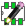
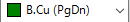
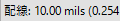
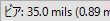
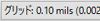
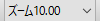
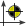
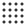

リファレンス・マニュアル
著作権
このドキュメントは以下の貢献者により著作権所有 © 2010-2015 されています。あなたは、GNU General Public License ( http://www.gnu.org/licenses/gpl.html ) のバージョン 3 以降、あるいはクリエイティブ・コモンズ・ライセンス ( http://creativecommons.org/licenses/by/3.0/ ) のバージョン 3.0 以降のいずれかの条件の下で、配布または変更することができます。
このガイドの中のすべての商標は、正当な所有者に帰属します。
*貢献者*
Jean-PierreCharras, FabrizioTappero
翻訳
miettal <iharahiromasa AT gmail.com>, 2015. starfort <starfort AT nifty.com>, 2015. Norio Suzuki <nosuzuki AT postcard.st>, 2015. yoneken <yoneken AT kicad.jp>, 2011-2015. Millo, Zenyouji, Silvermoon, Nekokuni, 2011-2012.
フィードバック
バグ報告や提案はこちらへお知らせください:
-
KiCad のドキュメントについて : https://github.com/KiCad/kicad-doc/issues
-
KiCad ソフトウェアについて : https://bugs.launchpad.net/kicad
-
KiCad ソフトウェアの国際化について : https://github.com/KiCad/kicad-i18n/issues
発行日とソフトウェアのバージョン
2014年3月17日 発行
1. Pcbnew 入門
1.1. 概要
Pcbnew は、Linux、Microsoft Windows や Apple OS X オペレーティングシステムで使用可能な強力なプリント回路基板用ソフトウェアツールです。Pcbnew は、プリント基板作成のための回路図キャプチャ・プログラム Eeschema と連携して使用されます。
Pcbnew は、フットプリントのライブラリを管理します。各々のフットプリントとは、ランドパターン（基板上に配置されたパッド）を含む物理的なコンポーネントを示す図です。必要なフットプリントはネットリストの読み込み中に自動的にロードされます。フットプリントやアノテーションは回路図で変更可能で、ネットリストを再生成して再度 Pcbnew へ読み込ませると反映されます。
Pcbnew は、配線とパッド間のクリアランス不足の問題を防止したり、ネットリスト／回路図上の接続と基板上の接続の相違を防ぐためのデザイン・ルール・チェック (DRC) ツールを提供します。インタラクティブルーターを使う際、デザイン・ルール・チェックを実行し続けることで自動的に独立したパターンを配置する手助けとなるでしょう。
Pcbnew は、ラッツネスト表示という図面上で接続されているフットプリントのパッドを接続する細い線を提供します。これらの接続は、配線とフットプリントの移動に追従して動的に動きます。
Pcbnew は、配線設計を補助するための簡単ながら効果的なオートルータを持っています。より高度な外部のオートルータを使用するために、SPECCTRA dsn フォーマットのファイルをインポート／エクスポートすることも出来ます。
Pcbnew は、高周波回路基板設計のための特別なオプション（例えば台形や複雑な形のパッド、プリント基板上のコイルの自動レイアウトなど）も提供します。
1.2. 主要な設計上の特徴
Pcbnew は 1 nm の内部分解能を持っています。全ての寸法は、nm 単位の整数値で保存されます。
Pcbnew は 32 の導体レイヤ、14 のテクニカルレイヤ（シルクスクリーン、ソルダマスク（レジスト）、コンポーネント接着剤、ソルダペースト、基板外形）、さらに 4 つの予備レイヤ（図形とコメント）を扱い、リアルタイムでの未配線のラッツネスト（細線表示）を管理します。
各要素（配線、パッド、文字、図形…）の表示はカスタマイズが可能です:
-
塗り潰しまたはアウトライン表示。
-
配線クリアランスの有無。
複雑な回路の場合、レイヤ、ゾーン、コンポーネントの表示は、画面の見やすさのため選択的に非表示とすることができます。同様に、配線のネットはハイコントラストとなるようハイライト表示できます。
フットプリントは 0.1 度刻みで任意の角度で回転できます。
Pcbnew はフットプリント エディタを含んでおり、基板上にある各々のフットプリントやライブラリ内のフットプリントの編集ができます。
フットプリント エディタは効率向上のためのツールを提供します。次のようなものです:
-
ナンバリングしたい順にパッド上へマウスをドラッグするだけの高速なパッドナンバリング。
-
LGA/BGA や円形のフットプリント用の長方形と円のパッド配列を簡単に作成。
-
パッドの行や列の半自動配置（配列ツール）。
フットプリントのパッドは調整用に様々なプロパティを持っています。パッドは円形、長方形、楕円、台形にできます。スルーホール部品のためドリルはパッドの内側へオフセットでき、円や細長い穴を配置できます。各パッドは回転でき、個別のハンダマスク、ネット、ペーストのクリアランスを持てます。パッドはまた容易に製造できるようにベタ接続やサーマルパターン接続ができます。各パッドのどのような組み合わせも一つのフットプリントへ含めることができます。
Pcbnew は、すべての必要なドキュメントを容易に生成できます:
-
製造用出力:
-
フォトプロッタ用ファイル（ガーバー RS274X フォーマット）。
-
穴あけ用ファイル（EXCELLON フォーマット）。
-
-
プロットファイル（HPGL, SVG, DXF フォーマット）。
-
プロットとドリルのマップ（POSTSCRIPT フォーマット）。
-
ローカルプリンタ出力。
1.3. 一般的な注意事項
角度の調整が必要なため、Pcbnew では３ボタンマウスの使用を強く勧めます。パンやズームなど多くの機能で３ボタンマウスが必要となります。
KiCad の新しいリリースでは、Pcbnew に CERN の開発者からの大幅な変更が見られます。これは新しいレンダラ (OpenGL と Cairo 表示モード ) 、押しのけ配線のインタラクティブ ルーター、差動ペアや蛇行した配線と配線長の調整、再整備されたフットプリント エディタのような多くの機能を含んでいます。これら新しい機能の多くが、新しい OpenGL と Cairo 表示モード に のみ 存在することに留意して下さい。
2. インストール
2.1. ソフトウェアのインストール
インストールの手順は、KiCad のドキュメントに記載されています。
2.2. デフォルト設定の変更
デフォルトの設定ファイル kicad.pro は、KiCad インストール・ディレクトリ下 kicad/share/template にあります。このファイルは、すべての新規プロジェクトの初期設定として使用されます。
この設定により、ロードされるライブラリを変更するよう修正できます。
以下のようにします:
-
直接あるいは kicad を使って、pcbnew を起動します。Windows では C:\kicad\bin\pcbnew.exe`（ユーザ環境によって変わります） 、そしてLinux ではバイナリが `/usr/local/kicad/bin にある場合、 /usr/local/kicad/bin/kicad あるいは /usr/local/kicad/bin/pcbnew で起動できます。
-
“設定” メニューより ”フットプリント ライブラリの管理” を選択します。
-
ロードするライブラリ一覧を編集します。
-
変更されたコンフィグレーションを kicad/share/template/kicad.pro に保存します。( “設定” メニューより ”設定の保存” )
2.3. フットプリント・ライブラリの管理: 以前のバージョン
設定メニューからライブラリリストの初期設定へと進めます。:
下の図はフットプリント・ライブラリ・リストを設定するダイアログです。
あなたはプロジェクトに必要なフットプリントを含むライブラリを追加しなければなりません。フットプリント名の衝突を避けるため、新しいプロジェクトからは使わないライブラリを削除することも必要です。複数のライブラリに重複したフットプリント名があると、フットプリントライブラリで問題となることに注意して下さい。このような場合、フットプリントはリスト中、最初に見つかったライブラリからロードされます。これは問題（必要とするフットプリントをロードできない）で、上のダイアログで “上” と “下” ボタンを使ってライブラリリストの順番を変えるか、フットプリント・エディタを使って固有の名前のフットプリントにします。
2.4. フットプリント・ライブラリの管理: .pretty リポジトリ
4.0 をリリースするにあたって、Pcbnew はフットプリントライブラリを管理するために実装された新しいフットプリント・ライブラリ・テーブルを使用します。前のセクションの情報はもはや無効です。ライブラリ・テーブル・マネージャは次のように呼び出せます。:
下の図は、フットプリント・ライブラリ・テーブル編集 (PCB ライブラリ一覧) ダイアログです。上部メニューバーにある “設定” → “ライブラリ テーブルの管理”と辿ると表示できます。
フットプリント・ライブラリ・テーブルは、サポートされている全ての種類のフットプリントライブラリに別名 (nickname) を付けます。この別名は、見つかった順番のライブラリを使用する以前の方法に代わって、フットプリントを探す時に使われます。この仕組みによって適切なライブラリから正しいフットプリントを確実にロードできるので、別のライブラリにある同じ名前のフットプリントを呼び出すことができます。これはまた、Eagle や gEDA のような別の PCB エディタからのライブラリの読み出しをサポートします。
2.4.1. グローバル・フットプリント・ライブラリ・テーブル
グローバル・フットプリント・ライブラリ・テーブルは、現在のプロジェクトに関係なく、常に有効なライブラリのリストを保持しています。このテーブルは、ユーザのホームディレクトリにある “fp-lib-table” ファイルに保存されています。このディレクトリの位置は、オペレーティングシステムに依存します。
2.4.2. プロジェクト固有のフットプリント・ライブラリ・テーブル
プロジェクト固有のフットプリント・ライブラリ・テーブルは、現在のプロジェクトにのみ有効なライブラリのリストを保持しています。プロジェクト固有のフットプリント・ライブラリ・テーブルは、プロジェクトの基板ファイルが読み込まれている時のみ編集可能です。プロジェクトファイルが読み込まれていないか、プロジェクトのパスにフットプリント・ライブラリ・テーブル・ファイルがない場合、編集可能な空のテーブルが作られ、後で基板ファイルと一緒に保存されます。
2.4.3. 初期設定
CvPcb または Pcbnew の初めての実行時には、グローバル・フットプリント・テーブル・ファイル fp-lib-table はユーザのホームディレクトリに見つかりません。Pcbnew は、システムの KiCad テンプレートディレクトリにあるデフォルトのフットプリント・テーブル・ファイル fp_global_table をユーザのホームディレクトリへ fp-lib-table ファイルとしてコピーしようとします。もし、fp-lib-table が見つからなかったら、ユーザのホームディレクトリに空のフットプリント・ライブラリ・テーブルが作られるでしょう。こうなった場合、ユーザは自分で fp_global_table をコピーし、手動でテーブルを設定できます。デフォルトのフットプリント・ライブラリ・テーブルは、KiCad の一部としてインストールされる標準のフットプリントライブラリを全て含んでいます。
2.4.4. テーブル要素の追加
フットプリントライブラリを使うには、まず最初にグローバルテーブルかプロジェクト固有のテーブルを追加しなければなりません。プロジェクト固有のテーブルは、基板ファイルが開かれた時のみ有効です。各ライブラリの入力項目は固有の別名 (nickname) を持つ必要があります。これは実際のファイル名やファイルパスとは全く関係ありません。コロン ( : ) は別名の中のいかなる場所でも使用できません。各ライブラリの入力項目は、そのライブラリの種類で有効なファイルパス、ファイル名を持つ必要があります。パスは、絶対、相対、または環境変数で指定できます。プラグインの種類は、ライブラリが正しく読み込まれるよう、適切に選択しなければなりません。Pcbnew は今のところ KiCad の古い種類、KiCad Pretty、Eagle と gEDA フットプリントライブラリをサポートしています。これらは、ライブラリ入力項目の説明フィールドに記述されます。オプションフィールドはこの時点では使われていませんので、オプションフィールドへの追加はライブラリの読み込みに影響を与えません。同じテーブルには重複した別名を持てないことに注意して下さい。しかしながら、グローバルとプロジェクト固有のフットプリント・ライブラリ・テーブルの両方で重複した別名を持つことは可能です。もし名前の衝突が起こったなら、プロジェクト固有のテーブルがグローバルテーブルに優先します。プロジェクト固有のテーブルに項目が入力されると、入力項目を含む fp-lib-table ファイルは現在開かれているネットリストのあるディレクトリに書き込まれます。
2.4.5. 環境変数の代替
フットプリント・ライブラリ・テーブルの最も強力な機能の一つは、環境変数の代替です。環境変数に保存されたライブラリへの独自のパスを定義するすることができます。環境変数の代替は、フットプリント・ライブラリ・パスで ${ENV_VAR_NAME} 構文を使うことにより、サポートされます。デフォルトでは、実行中 Pcbnew は環境変数 $KISYSMOD を定義します。ここは KiCad と一緒にインストールされたデフォルトのフットプリントライブラリの場所です。デフォルトのフットプリントライブラリに代わって自分のライブラリを置けるよう $KISYSMOD を上書きできます。基板が読み込まれると、Pcbnew はまた基板のファイルパスを使って、$KPRJMOD を定義します。これにより、プロジェクト固有のフットプリント・ライブラリ・テーブルでライブラリの絶対パスを定義することなく、プロジェクトのあるパスへライブラリを作ることができます。
2.4.6. GitHub プラグインの使用
GitHub プラグインは、pretty (Pretty は KiCad フットプリント・ファイル・フォーマットの名前です) フットプリントのリモート GitHub リポジトリへ読み込み専用でアクセスするためのインターフェイスを提供します。また、それらをローカルへ保存し、 GitHub リポジトリから読み込んだフットプリントを編集するための “Copy-On-Write“ (COW) サポートをオプションで提供します。このため、“GitHub“ プラグインは、 https://github.com で read-only for accessing remote pretty footprint libraries となります。 “ライブラリのパス“ へ GitHub エントリを追加するためには、フットプリント・ライブラリ・テーブルの行にある “ライブラリのパス“ へ有効な GitHub URL を設定する必要があります。
例:
https://github.com/liftoff-sr/pretty_footprints
（フォームを取得する）典型的な GitHub URL :
https://github.com/user_name/repo_name
“プラグインの種類“ は “Github“ を設定しなければなりません。 “Copy-On-Write“ 機能を有効にするには、フットプリント・ライブラリ・テーブルの入力項目にある “オプション” へ allow_pretty_writing_to_this_dir を設定しなければなりません。このオプションは、GitHub リポジトリから読み込んだフットプリントの編集されたコピーを保存するローカル ストレージに対する “ライブラリ パス“ です。このパスへ保存されたフットプリントは、GitHub リポジトリの他の読み込み専用パーツと一緒になってフットプリント ライブラリを構成します。GitHub ライブラリのオプションが存在すると、このハイブリッドライブラリへの全ての書き込みは ローカルの *.pretty ディレクトリに対して行われます。このハイブリッド COW ライブラリの一部となる github.com の部分は常に読み込み専用であることに注意、つまり、あなたは指定した GitHub リポジトリにあるどんなフットプリントに対しても変更、削除を直接行うことはできません。集合ライブラリタイプには “Github“ が残っていますが、ローカルの読み書き部分とリモートの読み込み専用部分の両方から構成されます。
以下のテーブルは allow_pretty_writing_to_this_dir オプションがないフットプリント・ライブラリ・テーブルの入力項目です。:
| Nickname | Library Path | Plugin Type | Options | Description |
|---|---|---|---|---|
github |
Github |
Liftoff’s GH footprints |
以下のテーブルは COW オプションのあるフットプリント・ライブラリ・テーブルの入力項目です。見本用のため、環境変数 ${HOME} を使っていることに注意してください。 github.pretty ディレクトリは、${HOME}/pretty/path となります。allow_pretty_writing_to_this_dir を使う時には必ず、あらかじめ .pretty という拡張子を持つディレクトリを作っておく必要があります。
| Nickname | Library Path | Plugin Type | Options | Description |
|---|---|---|---|---|
github |
Github |
allow_pretty_writing_to_this_dir= ${HOME}/pretty/github.pretty |
Liftoff’s GH footprints |
フットプリントの読み込みは、allow_pretty_writing_to_this_dir オプションで指定されるパスにあるローカルフットプリントが常に優先されます。フットプリント・エディタからフットプリントを保存することで COW ライブラリのローカルディレクトリへフットプリントを保存すると、ローカルに保存したフットプリントと同じ名前のフットプリントを読み込む際に GitHub のアップデートは適用されなくなります。
常に GitHub ライブラリごとに個別のローカル *.pretty ディレクトリを確保し、別のライブラリから複数回にわたって同じディレクトリを参照することでこれらを結合してはいけません。また、フットプリント・ライブラリ・テーブルの入力項目に同じ COW (*.pretty) ディレクトリを使用してはいけません。 これは恐らく混乱を招くでしょう。オプション allow_pretty_writing_to_this_dir の値は、 “ライブラリパス” の設定と同様、パスを作るにあたって ${} 表示を使い、環境変数を拡大できます。
COW のポイントは何でしょう？それは、フットプリント共有のターボチャージャーのようなものです。あなたが GitHub リポジトリのメインテナーに COW pretty フットプリントの変更を定期的にメールすることで、GitHub コピーのアップデートに貢献できます。単に COW ディレクトリで見つかった *.kicad_mod ファイルをGitHub リポジトリのメインテナーへメールするだけです。あなたの変更がコミットされたことを確認したなら、あなたは安全に自分の COW ファイルを削除でき、GitHub ライブラリの読み込み専用部分からアップデートされたフットプリントを落とせるでしょう。あなたのゴールは、 https://github.com の共有マスターコピーへ頻繁に貢献することで、COW ファイルのディレクトリサイズを可能な限り小さく保ち続けることです。
最終に、Nginx(high-speed Web server/reverse proxy and email proxy) をフットプリントの読み込みスピードを上げるための github のキャッシュとして使うことができます。これは、 pcbnew/github/nginx.conf での KiCad ソースの設定例です。これを使う最も簡単な方法は、デフォルトの nginx.conf を export KIGITHUB=http://my_server:54321/KiCad で上書きすることです。ここで、 my_server は nginx を実行しているマシンの IP またはドメイン名です。
2.4.7. 使用パターン
フットプリントライブラリは、読み込まれているプロジェクトに対して、グローバル、固有どちらとしてでも定義できます。ユーザのグローバルテーブルで定義されたフットプリントライブラリは常に有効で、ユーザのホームディレクトリにある fp-lib-table ファイル内に保存されます。グローバル・フットプリント・ライブラリは、プロジェクトのネットリストファイルを開いていない時でも、常にアクセスすることができます。プロジェクト固有のフットプリントテーブルは、現在開かれているネットリストファイルに対してのみ有効です。プロジェクト固有のフットプリント・ライブラリ・テーブルは現在開かれている基板ファイルのパスにある fp-lib-table ファイルに保存されます。どちらのテーブルにライブラリを定義しても構いません。
以下は、各方法の長所と短所です。:
-
全てのライブラリをグローバルテーブルで定義すると、必要な時にいつでも使うことができます。
-
これの短所は、探しているフットプリントを見つけるために多くの ライブラリを調べなければならなくなることです。
-
-
全てのライブラリをプロジェクト固有のテーブルへ定義することもできます。
-
これの長所は、プロジェクトが本当に必要とするライブラリだけとなるので、 探しやすくなることです。
-
これの短所は、プロジェクトごとに必要とするフットプリントライブラリを それぞれ忘れずに追加しなければならないことです。
-
-
フットプリントライブラリはグローバルとプロジェクト固有、両方のテーブルで定義することもできます。
使用パターンの一つは、よく使うライブラリをグローバル、そのプロジェクトでのみ必要とされるライブラリはプロジェクト固有のライブラリテーブルに定義することでしょう。ライブラリを定義するにあたっての制約は特にありません。
3. 一般操作
3.1. ツールバーとコマンド
Pcbnew では様々な方法によりコマンドを実行することが可能です:
-
上部メニューバー（メインウィンドウ上部にあるテキストベースのメニュー）。
-
上部ツールバー。
-
右ツールバー。
-
左ツールバー。
-
マウスボタン（メニュー選択）。:
-
マウスの右ボタンをクリックすると、マウスの矢印の下にある要素に応じた内容のコンテキストメニューを表示します。
-
-
キーボード（ファンクションキー F1, F2, F3, F4, Shift, Delete, +, -, Page Up, Page Down 及び スペース バー`）。`エスケープ キーは、一般的に進行中の操作を取り消します。
次のスクリーンショットは、利用可能な操作法のいくつかを示したものです:
3.2. マウスコマンド
3.2.1. 基本的なコマンド
-
左ボタン
-
シングル クリック によりカーソル下のフットプリントやテキストの属性を 下部のステータス バーに表示します。
-
ダブル クリック すると、（要素が編集可能な場合）カーソルの下の 要素のエディタが起動されます。
-
-
中央ボタン／ホイール
-
高速ズームとレイヤ マネージャでのコマンドに使われます。
-
特定領域にズームするためには、中央ボタンを押したままで矩形を描きます。 マウスホイールの回転により、ズームインとズームアウトすることが できます。
-
-
右ボタン
-
コンテキスト メニューを表示します
-
3.2.2. ブロックでの操作
ブロックを移動、反転(鏡像)、複写、回転、削除する操作は全てコンテキストメニューから可能です。さらにブロックで囲まれた領域へビューをズームできます。
ブロックの枠は左マウスボタンを押しながらマウスを動かすことで指定できます。その操作はボタンを放すことで確定します。
ホットキー Shift か Ctrl のどちらか、あるいは Shift と Ctrl 両方を一緒に押すことにより、ブロックの描画中、反転、回転、削除いずれかのコマンドが下表に示されるように自動選択されます:
| 操作 | コマンド |
|---|---|
マウス左ボタンを押したまま |
ブロックを移動します |
Shift + マウス左ボタンを押したまま |
ブロックを反転(ミラー)します |
Ctrl + マウス左ボタンを押したまま |
ブロックを90度回転させます |
Shift + Ctrl + マウス左ボタンを押したまま |
ブロックを削除します |
マウス中央ボタンを押したまま |
ブロックをズームします |
ブロックを移動する場合:
-
新しい位置にブロックを移動して、要素を配置するためにマウスの左ボタンを操作します。
-
操作をキャンセルするには、マウスの右ボタンを使用し、メニューからブロックのキャンセルを選択します（または Esc キーを押します）。
ブロックを描画する際に何もキーが押されていない場合、コンテキストメニューを表示して必要な操作を選択するためには代わりにマウスの右ボタンを使用します。
それぞれのブロック操作に対して、選択ウィンドウを使用すると、いくつかの要素だけに限定して操作することができます。
3.3. グリッド サイズの選択
要素のレイアウト際、カーソルはグリッド上を移動します。左のツールバーのアイコンを使用してグリッドのオン／オフを切り替えることができます。
定義済のグリッドサイズとするか、ユーザ定義のグリッドサイズとするかは、画面の上部のツールバーのドロップダウンリストあるいはコンテキスト メニューを使用して選択することができます。ユーザ定義のグリッドサイズは、メニューバーから 寸法 → グリッド を選択してユーザグリッドで設定します。
3.4. ズーム レベルの調整
ズーム レベルは、以下に示すような方法で変更することができます:
-
コンテキスト メニューを開き (マウス右ボタンを使って) 、希望するズームを選択します。
-
次のファンクション キーを使用します:
-
F1: 拡大(ズームイン)
-
F2: 縮小(ズームアウト)
-
F3: 画面を再描画
-
F4: 現在のカーソル位置を中央にして表示
-
-
マウスホイールを回転させます。
-
マウス中央ボタンを押したままで四角形を描くと、その領域をズームインします。（Windows環境下では、動作しないことがあります。）
3.5. カーソル座標の表示
左側のツールバーにあるインチ／ mm 切り替えアイコンによる選択に従い、カーソル座標は ‘インチ’ または ‘mm’ で表示されます。
どちらの単位が選択されても、Pcbnew は常に 1/10,000 インチ精度で稼働します。
以下は画面下部のステータスバー表示です:
-
現在のズーム設定。
-
カーソルの絶対位置。
-
カーソルの相対位置。スペースバーを押すと相対座標 (x,y) を任意の位置で (0,0) に設定するので注意してください。以降、カーソルの位置はこの新しい位置を基準に相対表示されます。
またカーソルの相対位置は、極座標（半径+角度）でも表示できます。これは、左ツールバーのアイコンを使用して切替できます。
3.6. キーボード コマンド - ホットキー
多くのコマンドは、直接キーボードにより操作可能です。大文字または小文字のどちらかに割り当てられています。ほとんどのホットキーは、メニューに表示されています。表示されていないホットキーは、以下のとおりです。:
-
`Delete(Del)`：フットプリントや配線を削除します。 (フットプリント モードまたは配線 モードが有効な場合のみ実行可能です。)
-
`V`：作業中のレイヤをペアで設定されたレイヤに切り替えます。配線中はビアが配置され、ペアのレイヤ側の作業に移行します。
-
＋ と `－`：アクティブ レイヤを次、あるいは前のレイヤへ変更します。
-
`？`：全てのホットキーのリストを表示します。
-
`スペース`：相対座標をリセットします。
3.7. ブロックでの操作
ブロックを移動、反転(鏡像)、複写、回転、削除する操作は、全てコンテキスト メニューから実行可能です。さらにブロックで囲まれた領域へビューをズームできます。
ブロックの枠は左マウスボタンを押しながらマウスを動かすことで指定できます。その操作はボタンを放すことで確定します。
Shift か Ctrl の一つ, あるいは Shift と Ctrl 両方同時、あるいは Alt を押すことにより、ブロックの描画中、反転、回転、削除、複写いずれかのコマンドが下表に示されるように自動選択されます:
| 操作 | コマンド |
|---|---|
マウス左ボタンを押したまま |
ブロックを移動します |
Shift + マウス左ボタンを押したまま |
ブロックを反転(ミラー)します |
Ctrl + マウス左ボタンを押したまま |
ブロックを 90度回転させます |
Shift + Ctrl + マウス左ボタンを押したまま |
ブロックを削除します |
Alt + マウス左ボタン押したまま |
ブロックを複写します |
ブロックコマンド状態ではダイアログウィンドウが表示され、このコマンドを適用するアイテムを選択することができます。
上記のどのコマンドも、同じコンテキストメニューまたはエスケープキー (Esc) を押すことで取り消すことができます。
3.8. ダイアログで使われる単位
寸法値を表示するのに使用できる単位はインチと mm です。使用する単位は、左ツールバーにあるアイコン

 を押して選択できます。新しい値を入力する際には、値の単位も入力できます。
を押して選択できます。新しい値を入力する際には、値の単位も入力できます。
利用可能な単位は次のとおりです:
1 in |
1 inch |
1 ” |
1 inch |
25 th |
25 thou (1/1000 inch) |
25 mi |
25 mils, thou と同じ |
6 mm |
6 mm |
ルールは次のとおりです:
-
数値と単位の間にはスペースを入れられます。
-
最初の２文字だけが重要です。
-
ピリオドと異なる代替の小数点記号( , )を使用している国では、ピリオド( . )も同じ様に扱われます。従って 1,5 と 1.5 はフランス語では同じ意味です。
3.9. 上部メニューバー
上部メニューバーは、ファイル(読み込みと保存)、設定オプション、印刷、プロットやヘルプファイルへのアクセスを提供します。
3.9.1. ファイルメニュー
ファイルメニューではプリント基板の印刷、プロットだけでなく、プリント基板ファイルの読み込み、書き込みができます。自動テスターで使用する回路を出力（ GenCAD1.4 形式）することもできます。
3.9.2. 編集メニュー
いくつかの基板全体に対する編集コマンドがあります:
3.9.3. 表示メニュー
ズーム機能と3D ビューア (3D による基板表示) があります。
3D ビューア
3D ビューアを開きます。サンプルを示します:
描画キャンバスの切替
以下の描画キャンバスに切り替えることができます。
-
標準
-
OpenGL (3D)
-
Cairo (2D)
3.9.4. 配置メニュー
右ツールバーと同じ機能です。
3.9.5. 配線メニュー
配線のための機能です。
3.9.6. 設定メニュー
次の項目が実行可能です。:
-
フットプリントライブラリの選択。
-
レイヤマネージャの表示／非表示（表示レイヤやその他要素の色を選択。 要素表示の有無を選択。）
-
一般オプションの管理（単位など）。
-
その他表示オプションの管理。
-
ホットキー ファイルの作成、編集（および再読込）。
3.9.7. 寸法メニュー
重要なメニューです。下記の調整ができます:
-
ユーザ・グリッド・サイズ。
-
テキストの大きさと描画の線幅。
-
パッドの寸法と属性。
-
ハンダ・レジスト・レイヤとハンダ・ペースト・レイヤのグローバル値の設定
3.9.8. ツールメニュー
3.9.9. デザイン・ルール・メニュー
2 つのダイアログボックスが利用できます:
-
デザインルール (配線とビアサイズ、クリアランスの設定)。
-
レイヤのセットアップ (レイヤの数、名前、有効化の設定)
3.9.10. ヘルプメニュー
ユーザマニュアルとバージョン情報(Pcbnew について)メニューへのアクセスを提供します。
3.10. 上部ツールバーにあるアイコンの使用
このツールバーは、Pcbnew の主な機能へのアクセスを提供します。
|
新規プリント回路の作成 |
|
既存のプリント回路をオープン |
|
プリント回路を保存 |
|
ページサイズの選択とファイルのプロパティの変更 |
 |
ライブラリまたは PCB フットプリントを編集／表示するためにフットプリント・エディタを開く |
|
ライブラリや基板のフットプリントを表示するフットプリント ビューアを開く |
|
直前のコマンドの Undo と Redo（１０段階） |
|
プリントメニューを表示する |
|
プロットメニューを表示する |
|
ズームインとズームアウト（画面の中心基準） |
|
画面の再描画 |
|
オートズーム (ページを画面にフィット) |
|
フットプリントまたはテキストを検索 |
|
ネットリストの操作（選択、読込み、テスト、コンパイル） |
|
DRC（デザインルールチェック）: 配線の自動チェック |
 |
ワーキングレイヤの選択 |
|
レイヤペアの選択（配線中にビアを配置した場合の切り替え先レイヤを設定） |
|
フットプリントモード：有効にした場合、コンテキストメニューでフットプリントオプションを表示 |
|
配線モード：有効にした場合、コンテキストメニューでルーティングオプションを表示 |
|
自動ルータ Freerouter 用ファイルのインポート／エクスポート。 |
|
Python スクリプト コンソールの表示／非表示 |

3.10.1. 補助ツールバー
 |
使用する配線幅の選択。 |
 |
使用するビア寸法の選択。 |
|
自動配線幅: 新しい配線の作成時に有効の場合、既存の配線上から始まる新しい配線を既存の配線幅へ設定。 |
 |
グリッドサイズの選択。 |
 |
ズームの選択。 |
3.11. 右ツールバー
このツールバーは、Pcbnew で PCB を変更するための編集ツールへのアクセスを提供します:
|
|
標準マウスモードを選択 |
|
パッドまたは配線上で選択されたネットをハイライト |
|
|
ローカルラッツネストを表示 (パッドまたはフットプリント) |
|
|
ライブラリからフットプリントを追加 |
|
|
配線とビアの配置 |
|
|
ゾーンの配置 (導体レイヤ) |
|
|
キープアウトエリア(禁止エリア)の配置 (導体レイヤ) |
|
|
テクニカルレイヤ上に線を描く (導体レイヤには配置できません) |
|
|
テクニカルレイヤ上に円を描く (導体レイヤには配置できません) |
|
|
テクニカルレイヤ上に円弧を描く (導体レイヤには配置できません) |
|
|
テキストの配置 |
|
|
テクニカルレイヤ上に寸法線を描く (導体レイヤには配置できません) |
|
|
位置合わせマークを描く (全てのレイヤの上に現れます) |
|
|
カーソルが指し示す要素を削除 注: もし、いくつかの重なった要素の場合、最も低い優先度が与えられたもの （優先度が下げられたトラック、テキスト、フットプリント）が削除されます。 上部ツールバーの “元に戻す” 機能では、最後の削除をキャンセルできます。 |
|
 |
ドリルの座標ファイルのためのオフセットを調整。 |
|
|
グリッドの原点(グリッドのオフセット)。主にフットプリントの編集および配置するのに便利です。 寸法／グリッドメニューでも設定できます。 |

-
フットプリント、配線、導体ゾーン、 テキストなどの配置。
-
ネットをハイライト表示。
-
ノート（注釈、メモ）、グラフィック要素などの作成。
-
要素の削除。
3.12. 左ツールバー
このツールバーは表示と制御オプションを提供します。
|
|
DRC (デザインルールチェック) のオン／オフ。 注: DRC がオフになっている時には、正しくない接続を行うことができます。 |
 |
グリッド表示のオン／オフ。 注: ズームが十分でない場合、細かいグリッドは 表示されないことがあります。 |
|
|
ステータスバー上にある相対座標の表示形式を切替 (極座標／直交座標) |
|
|
表示／入力する座標、寸法の単位を切替 (インチ／mm) |
|
|
カーソル形状の変更 |
|
|
一般ラッツネストの表示 (フットプリント間の不完全な接続) |
|
|
移動中フットプリントのラッツネストを動的に表示 |
|
|
(再描画時の) 配線自動削除の有効／無効 |
|
|
ゾーンの塗り潰しエリアを表示 (ゾーンのアウトライン+塗潰し) |
|
|
ゾーンの塗り潰しエリアを表示しない (ゾーンのアウトラインのみ表示) |
|
|
ゾーンの塗り潰しエリアのアウトラインのみ表示 (ゾーンのアウトライン+塗潰しのアウトライン) |
|
|
アウトラインモードでのパッド表示のオン／オフ |
|
|
アウトラインモードでのビア表示のオン／オフ |
|
|
アウトラインモードでの配線表示のオン／オフ |
|
|
ハイコントラスト・モードのオン/オフ。このモードが有効な時にはアクティブなレイヤは通常表示され、その他のレイヤはグレーで表示されます。多層基板の設計に便利です。 |
|
|
レイヤマネージャの表示／非表示 |
|
|
マイクロウェーブツールにアクセス (開発中) |

3.13. コンテキスト メニューを使った迅速な編集作業
マウスを右クリックするとコンテキスト メニューが開きます。その内容はカーソルが指し示す要素によって変わります。
これは、次への迅速なアクセスを提供します:
-
表示の変更 (カーソル位置を画面中央に表示、ズームイン、ズームアウト、あるいはズームの選択)。
-
グリッドサイズの設定。
-
さらに要素上での右クリックにより、修正している要素のパラメータを編集可能です。
以下のスクリーンショットはコンテキスト メニューがどのように表示されるかを示しています。
3.14. 利用可能なモード
コンテキスト メニューを使用する場合、3つのモードがあります。これらのモードによって、コンテキスト メニューにある特定のコマンドは、追加あるいは削除されます。
|
ノーマルモード |
|
フットプリントモード |
|
配線モード |
3.14.1. ノーマルモード
-
未選択時のコンテキストメニュー:
-
選択した配線上でのコンテキストメニュー:
-
選択したフットプリント上でのコンテキストメニュー:
3.14.2. フットプリントモード
フットプリントモードでの同じ例 (
 有効)
有効)
-
未選択時のコンテキストメニュー:
-
選択した配線上でのコンテキストメニュー:
-
選択したフットプリント上でのコンテキストメニュー:
3.14.3. 配線モード
配線モードでの同じ例 (
 有効)
有効)
-
未選択時のコンテキストメニュー:
-
選択した配線上でのコンテキストメニュー:
-
選択したフットプリント上でのコンテキストメニュー:
4. 回路図の具現化
4.1. プリント基板への回路図のリンク
一般に、回路図はネットリストファイルによってプリント基板にリンクされます。そのネットリストは通常、回路図を作成するために使った回路図エディタで生成されます。Pcbnew は、Eeschema または Orcad PCB2 で作成したネットリストファイルを読み込み可能です。回路図から生成されたネットリストファイルは、個々のコンポーネントに対応するフットプリントを普通は持ちません。そのため、中間の段階が必要になります。この中間処理により、コンポーネントとフットプリントの関連付けが行われます。KiCad においては、CvPcb がこの関連付けのために使用され、 “*.cmp” という名前のファイルを生成します。CvPcb はまた、この情報を使用してネットリストファイルを更新します。
CvPcb は、回路図の各編集過程でのフットプリントの再割り当て作業を保存している "スタッフ ファイル (stufffile)" *.stf を出力することも可能です。（各コンポーネントの F2 フィールドとして回路図ファイルへバック アノテートすることができます。）Eeschemaでは、コンポーネントをコピーするということは同時にフットプリント割り当てのコピーも意味し、後の自動増分 (incremental) アノテーションのためにリファレンス指定子 (reference designator) を未割り当てに設定します。
Pcbnew は変更されたネットリストファイル .net と (存在するなら) .cmp ファイルを読み込みます。Pcbnew で直接フットプリントが変更されると、CvPcb を再実行しなくても済むように .cmp ファイルは自動更新されます。
"KiCad ことはじめ" マニュアルの KiCad 作業の流れ の章にある図は、KiCad の全作業フローを示しており、KiCad を構成する各ソフトウェアツールが中間ファイルをどのように利用するかを示しています。
4.2. プリント基板の作成手順
Eeschema で回路図を作成した後に:
-
Eeschema を使用してネットリストを生成します。
-
Cvpcb を使用して、ネットリストファイルの各コンポーネントを対応する（プリント基板で使用する）フットプリントに割り当てます。
-
Pcbnew は起動されると、変更されたネットリストを読み込みます。また、フットプリントを選択するためのファイルも読み込みます。
それから Pcbnew は自動的に全ての必要なフットプリントを読み込みます。フットプリントは手動または自動で基板上に配置できるようになり、配線の引き回しが可能となります。
4.3. プリント基板の更新手順
（プリント基板を作成した後で）回路図が修正された場合、次のステップを繰り返さなければなりません:
-
Eeschema を使用して新規ネットリストファイルを生成します。
-
回路図の修正が新規コンポーネントを含んでいる場合、Cvpcb を使用して対応するフットプリントを割り当てなければなりません。
-
Pcbnew を起動し、修正されたネットリストを再読み込み（フットプリントを選択するためのファイルも再読み込み）します。
それから Pcbnew は新規フットプリントを自動的に読み込み、新しい接続を追加し、冗長な接続を削除します。この処理はフォワード アノテーションと呼ばれ、基板 (PCB) を作成し、更新する場合、ごく一般的な手順です。
4.4. ネットリストファイルの読み込み - フットプリントの読み込み
4.4.1. ダイアログボックス
アイコン
 からアクセスできます。
からアクセスできます。
4.4.2. 利用可能なオプション
フットプリントの選択 |
コンポーネントおよび対応する基板上のフットプリントは以下のようにリンクされます。: 通常のリンクはリファレンスです。（通常オプション） 前回のアノテーションが破壊された場合、タイムスタンプを回路図の再アノテーション後 に使用できます。(特別オプション) |
フットプリントの入れ替え: |
ネットリスト内のフットプリントが変更された場合:古いフットプリントを維持 または新しいものに変更します。 |
未接続配線 |
既存の全配線を維持、またはエラーのある配線を削除します。 |
ネットリストにない部品 |
ネットリストにはない基板上のフットプリントを削除します。 "ロック" 属性のあるフットプリントは削除されません。 |
4.4.3. 新規フットプリントの読み込み
GALモード (OpenGL/Cairo) の画面でネットリストファイルの中に新規フットプリントが見つかった場合、それらは自動的に読み込まれて拡散され、好みの場所へグループで配置できるようになっています。

以前のバージョンと互換のある画面でネットリストファイルの中に新規フットプリントが見つかった場合、それらは自動的に読み込まれて座標 (0,0) に配置されます。

新規フットプリントを一つずつ移動して並べることができます。より良い方法は、自動的にそれらを（重ならないように）移動させることです:
フットプリントモードをアクティブにします (
 )
)
マウスのカーソルを適切な（コンポーネントが置かれていない）領域に移動させ、右ボタンをクリックします:
-
基板に既にフットプリントがある場合は、 “新しいフットプリントを自動配置” を選択します。
-
初回は（新規で基板を作成する時）、 “全てのフットプリントを自動配置” を選択します。
次のスクリーンショットにその結果を示します。

5. レイヤ
5.1. はじめに
Pcbnew は 50 の異なるレイヤで作業することが可能です:
-
32 (番号 0～31) の配線用の導体レイヤ。
-
14 の用途が決まっているテクニカル レイヤ:
-
12のペアになっているレイヤ (表面／裏面、各6): 接着(ボンド) (Adhesive), ハンダペースト (Solder Paste), シルクスクリーン (Silk Screen), ハンダマスク (Solder Mask), コートヤード (Courtyard), 製造 (Fabrication)
-
2つの単独レイヤ: 基板外形 (Edge Cuts), マージン (Margin)
-
-
4つの必要に応じて使用できる補助レイヤ: コメント (Comments), 設計変更指示 1 (E.C.O. 1), 設計変更指示 2 (E.C.O. 2), 図 (Drawings)
5.2. レイヤのセットアップ
メニューバーから レイヤ セットアップ を開くためには、 デザインルール → レイヤ セットアップ を選択します。
導体レイヤの数、それらの名前と機能を設定します。未使用のテクニカル レイヤは、無効に設定することが可能です。
5.3. レイヤの詳細
5.3.1. 導体レイヤ
導体レイヤ (.Cu) は、配線および再調整 (rearrange) で使用される通常の作業レイヤです。レイヤの番号は 0 (表面となる最初の導体レイヤ) で始まり、31 (裏面) で終わります。 内層 (番号 1～30) に部品を配置することはできないので、番号 0 と 31 のみが 部品面 となります。
任意の導体レイヤは名前の編集が可能です。導体レイヤは外部ルーター Freerouter を使用する場合に便利な属性を持ちます。例えばデフォルトのレイヤ名は、レイヤ番号 0 に対して F.Cu と In0 です。
5.3.2. ペアになっているテクニカルレイヤ
12のテクニカルレイヤはペアで使用されます: 一方は表面で、もう一方が裏面です。これらは名前に "F." または "B." の接頭辞が付けられて区別されます。あるレイヤ (表または裏) に現れているフットプリントを構成している要素 (パッド、図、テキスト) は、そのフットプリントが反転 (鏡像) されると、ペアになっているもう一方のレイヤに現れます。
以下はペアになっているテクニカルレイヤです:
- 接着(ボンド) (Adhesive) (F.Adhes と B.Adhes)
-
一般的にハンダディップ（フロー工程）の前に、SMDコンポーネントを回路基板に貼り付けるためのボンド塗布工程で使用されます。
- ハンダペースト (Solder Paste) (F.Paste と B.Paste)
-
一般的にはリフロー工程の前に、表面実装コンポーネントのパッド上にハンダペースト (クリームハンダ) を印刷するためのメタルマスクを作成するために使用されます。通常は、表面実装パッドのみがこれらのレイヤを占めます。
- シルクスクリーン (Silk Screen) (F.SilkS と B.SilkS)
-
コンポーネントの図形要素を描くレイヤです。例えば、部品の極性、１番ピン表示、実装用の部品番号などはこのレイヤに描画します。
- ハンダマスク (Solder Mask) (F.Mask と B.Mask)
-
ハンダレジストのフォトマスクです。すべてのパッドはこれらのレイヤのうちどちらか一方 (SMT) または両方 (スルーホール) に現れ、レジスト膜がパッドを覆わないようにします。
- コートヤード (Courtyard) (F.CrtYd と B.CrtYd)
-
部品が物理的に占有する領域 (隣接部品およびランドパターンに接触させないために必要な最小禁止領域) を基板上に示すために使用されます。
- 製造 (Fabrication) (F.Fab と B.Fab)
-
組立て等の製造用途で使用されます。（通常、基板単体には表示されません）
5.3.3. 単独のテクニカルレイヤ
- 基板外形 (Edge.Cuts)
-
このレイヤはプリント基板の外形図用に予約されています。このレイヤに配置されているすべての要素(グラフィック、テキスト…)は、他のすべてのレイヤに現れます。基板外形を作成するためにのみ、このレイヤを使用して下さい。
- マージン (Margin)
-
基板の端部からパターンや部品までの距離 (エッジ間げき) を取った外形ラインを示すために使用されます。
5.3.4. 汎用レイヤ
これらのレイヤは任意で使用できます。自動組立てや機械加工用のファイルを作るために使用したり、部品実装やコネクタ配線を指示するための指示書、基板の組立図に、これらのレイヤを使用することができます。以下はその名前です:
-
コメント (Comments)
-
設計変更指示 1 (Engineering Change Order(E.C.O.) 1)
-
設計変更指示 2 (Engineering Change Order(E.C.O.) 2)
-
図 (Drawings)
5.4. アクティブレイヤの選択
以下のようないくつかの方法でアクティブな作業レイヤの選択が可能です:
-
右ツールバー（レイヤマネジャー）を使用する。
-
上部ツールバーを使用する。
-
（マウスの右ボタンで開く）コンテキスト メニュー使用する。
-
“＋” と “－” キーを使用する（導体レイヤ上のみ）。
-
ホットキーを使用する。
5.4.1. レイヤマネジャーを使用した選択
5.4.2. 上部ツールバーを使用した選択
これは作業レイヤを直接選択します。
作業レイヤを選択するためのホットキーが表示されます（ PgUp, PgDn など一部のみ）。
5.4.3. コンテキスト メニューを使用した選択
コンテキスト メニューから “作業レイヤの選択” を選び、メニューウィンドウ（レイヤの選択）を開きます。
5.5. ビア用レイヤの選択
右ツールバーで *配線とビアの追加* アイコンが選択されている場合、 “ビアのレイヤペアを選択” オプションがコンテキスト メニューに表示されます:
これを選択するとメニューウィンドウ（導体ペアレイヤの選択）が開き、ここでビア用に使用するレイヤの選択を行います。
ビアが配置されると、作業（アクティブ）レイヤは、ビア用に使用されるレイヤペアのもう一方のレイヤに自動的に切り替わります。
ホットキーで別のアクティブなレイヤに切り替えることも可能です。また、配線途中の場合にはビアが挿入されます。
5.6. ハイコントラストモードの使用
“ハイコントラスト表示モード” ツール（左ツールバー）をクリックして有効にした場合、このモードになります:

このモードを使用すると、アクティブなレイヤはノーマルモードで表示されますが、他の全てのレイヤはグレイカラー表示（グレイスケール）になります。
これは次の２つの場合に役立ちます:
5.6.1. ハイコントラストモードの導体レイヤ
４層を超える基板の場合、このオプションによってアクティブな導体レイヤをより見やすくさせることができます:
ノーマルモード (裏面導体レイヤ・アクティブ):

ハイコントラストモード (裏面導体レイヤ・アクティブ):

5.6.2. テクニカルレイヤ
もう一つのケースは、ハンダ・ペースト・レイヤとハンダ・レジスト・レイヤを調べる必要がある場合で、これらは通常表示されません。
このモードが有効な場合、パッド上にマスクが表示されます。
ノーマルモード （表面レジストレイヤ・アクティブ） :

ハイコントラストモード （表面レジストレイヤ・アクティブ） :
6. 基板の作成および修正
6.1. 基板の作成
6.1.1. 基板外形の作成
通常、基板の外形を最初に定義するのはよい考えです。外形は一連のラインセグメントとして作成されます。アクティブなレイヤとして Edge.Cuts を選択し、図形ライン（またはポリゴン）を入力 ツールを使用して外形を描画します。描画は、各頂点の位置でクリックし、最後にダブルクリックして外形線を確定させます。通常基板には非常に正確な寸法があり、そのため外形の描画にはカーソル座標の表示が必要になるかもしれません。相対座標はスペースバーを使用していつでもゼロにできます。また、Ctrl-U を使用して表示単位を inch または mm に変更できます（トグル動作）。相対座標により非常に正確な寸法で描画することができます。円（または円弧）を使った外形も作成可能です:
-
円入力 または 円弧入力 を選択します。
-
クリックして円の中心を固定します。
-
マウスを移動して半径を調節します。
-
再度クリックして終了します。
|
注
|
上部メニューバー “寸法” → “テキストと図形” またはコンテキストメニュー “配線セグメントのプロパティ” で、外形線の幅の変更が可能です。（ 1/10 mil 単位で 幅 = 150 を推奨）ただし、アウトラインモード以外でグラフィック表示されなければ、それは表示されないでしょう。 |
以下は基板外形の例です:

6.1.2. 基板外形のための DXF 図面の使用
直接 Pcbnew で基板外形を作成する代わりに、基板外形を DXF 図面からインポートすることもできます。
この機能を用いると、より複雑な形状の基板を作成できます。
例えば、機械系 CAD は筐体に合わせた基板外形の定義に使用できます。
KiCad へインポートするための DXF 図面の準備
KiCad の DXF インポートは、 ポリライン(POLYLINES) や 楕円(ELLIPSIS) のような DXF の機能をサポートしていません。これらの機能を使用している DXF ファイルは、インポートのために若干の変換ステップを必要とします。
LibreCAD のようなソフトウェアは、 この変換のために使用できます。
最初のステップとして、 ポリライン は基本の単純な形状へ分割 (Exploded) する必要があります。LibreCAD では以下のような手順となります:
-
DXF ファイルのコピーを開きます。
-
基板外形を選択します。（選択された外形は破線で表示されます）
-
Modify メニューで、Explode を選択します。
-
ENTER キーを押します。
次のステップとして、 楕円(ELLIPSIS) のような複雑な曲線は、その形状に近似した連続する短い線分へと分割する必要があります。これは、古い DXF R12 ファイルフォーマットへエクスポートするか保存する時に、自動的に行われます。（R12 フォーマットは複雑な曲線の形状をサポートしていないので、CADソフトはこれらの形状を線分へと変換します。いくつかの CAD ソフトは、使用する線分の長さや数を選べるようになっています。）LibreCAD では、基板外形に使用するには十分に小さい線分の長さとなっています。
LibreCAD では、DXF R12 ファイルフォーマットのエクスポートは次のようなステップとなります:
-
File メニューで、Save As… を使います。
-
Save Drawing As ダイアログの下の方に Save as type: セクションがあります。ここでオプション Drawing Exchange DXF R12 を選びます。
-
File name: フィールドへ任意のファイル名を入力します。
-
Save をクリックします。
これで KiCad へインポートする DXF ファイルの準備ができました。
KiCad への DXF ファイルのインポート
以下のステップは、準備した DXF ファイルを KiCad へ基板外形としてインポートする方法を示したものです。インポートの方法は使用している キャンバス によって若干異なることに注意してください。
"default" キャンバス モードを使用:
-
ファイル メニューから インポート を選び、DXF ファイル オプションを選択します。
-
DXF ファイルのインポート ダイアログで、 参照 を使ってインポートために準備した DXF ファイルを選択します。
-
DXF の原点座標 (0,0) をセット: オプションで、基板の座標に対する DXF の原点の位置を選びます。（KICad の基板は左上角を (0,0) としています。）ユーザー定義の位置 を選んだ場合は、 X 位置 と Y 位置 フィールドへ座標を入力します。
-
レイヤ セクションで、インポートする基板レイヤを選択します。 基板外形には Edge.Cuts を選択する必要があります。
-
OK をクリックします。
"OpenGL" または "Cairo" キャンバス モードを使用:
-
ファイル メニューから インポート を選び、DXF ファイル オプションを選択します。
-
DXF ファイルのインポート ダイアログで、 参照 を使ってインポートために準備した DXF ファイルを選択します。
-
DXF の原点座標 (0,0) をセット: オプションの設定は、このモードでは無視されます。
-
レイヤ セクションで、インポートする基板レイヤを選択します。 基板外形には Edge.Cuts を選択する必要があります。
-
OK をクリックします。
-
図形はカーソルに連動し、基板の領域を動かすことができます。
-
基板へ図形を ドロップ するには、マウスを左クリックします。
DXF 図形をインポートした例
以下は、短い線分の集合で近似したいくつかの楕円部分を持つ基板を DXF インポートした例です:
6.1.3. 回路図から生成したネットリストの読み込み
 アイコンをアクティブにしてネットリストのダイアログを表示します:
アイコンをアクティブにしてネットリストのダイアログを表示します:
“ネットリストファイル” に表示されたファイル名が正しくない場合、“参照” ボタンを押して読み込みたいネットリストを選択します。それから “現在のネットリストを読み込む” ボタンを押します。既に読み込み済ではない全てのフットプリントが重なって画面に現れるでしょう（それらを自動的に移動させる方法を次に示します）。

フットプリントが１つも配置されていない場合、全てのフットプリントは基板上の同じ場所に現れて識別が困難になります。マウスの右ボタンで表示されるコンテキストメニューから “グローバル配置／移動” コマンドを使用して、それらを自動的に並べることが可能です。（上部ツールバーのアイコンでフットプリントモードにしておく必要があります。）以下はその自動配置の結果です:

|
注
|
CvPcb でフットプリントを新しいもの（例えば、1/8W 抵抗を 1/2W に変更）に置き換えて基板を修正する場合、新しいフットプリントを Pcbnew が読み込む前に古いフットプリントを削除しておくことが必要です。あるフットプリントを既存の別のフットプリントに置き換える場合は、置き換えたいフットプリント上でマウスの右ボタンをクリックして “パラメータの編集” を選び、 “フットプリントのプロパティ” から “フットプリントの変更” を使うとより簡単に変更できます。 |
6.2. 基板の修正
回路図の変更に応じて基板を修正することは、頻繁に行われます。
6.2.1. 修正手順
-
変更した回路図から新しいネットリストを作成します。 新しいコンポーネントが追加されている場合、CvPcb で対応するフットプリントをそれらにリンクします。
-
Pcbnewで新しいネットリストを読み込みます。
6.2.2. 不要な配線の削除
Pcbnew は、回路を変更したことで不要になった配線を自動的に削除できます。これを行うには、ネットリストのダイアログにある “未接続配線” オプションで “削除” を選択します。:
しかしながら、手作業で配線修正した方が速いこともよくあります（ DRC 機能により特定できます）。
6.2.3. コンポーネントの削除
Pcbnew は、回路図から削除したコンポーネントに対応するフットプリントを削除することもできます。
また、基板で追加した回路図にはないフットプリント（例えば、固定用のネジ穴）のためには保持することも必要です。
ネットリストのダイアログにある “ネットリストに無い部品” オプションで “削除” を選択した場合、ネットリストに見つからないコンポーネントに対応するフットプリントは削除されます。削除したくないものは “フットプリントのプロパティ” にある “移動／配置” オプションで “モジュールをロック” を選択します。“機械的” フットプリント用にこのオプションを使います:
6.2.4. 修正済みフットプリント
（ CvPcb を使用して）ネットリスト内のフットプリントを変更した場合、ネットリストのダイアログにある “フットプリントの入れ替え” オプションで “変更” を選択しなければ Pcbnew で変更されません:
フットプリントを編集することによりフットプリントの変更（例えば、抵抗器を異なるサイズのものと置き換える）を直接行えます。
6.2.5. 詳細オプション - タイムスタンプを使用した選択
回路の部品を変更せずに回路図の記述を変更することが時々あります（例えば、R5、U4…のようなリファレンスに関する変更)。この場合、基板では（多分、シルクスクリーンを除いて）変更がありません。そうは言っても、内部的にはコンポーネントとフットプリントはリファレンスで表現されています。場合によっては、ネットリストの再読み込み前に、ネットリストのダイアログにある “フットプリントの選択” オプションで “タイムスタンプ” を選択しなければならないことがあります:
このオプションを使用すると、Pcbnew はリファレンスでフットプリントを認識する代わりにタイムスタンプで認識します。タイムスタンプは Eeschema が自動的に生成します（回路図にコンポーネントを配置した時の時刻および日付です）。
|
警告
|
このオプションを使用する場合は特に注意が必要です（先ずファイルを保存！）。これは複数ユニットを持つコンポーネントの場合、そのやり方が複雑だからです（例えば、7400 にはパーツが４個と１つのパッケージがあります）。この場合、タイムスタンプは一意に定義されません（ 7400 の場合、各パーツにつき１～４まで同じものが存在することになります)。そうは言っても、タイムスタンプは通常、再アノテーションに関する問題を解決します。 |
6.3. 配置済みフットプリントの直接交換
あるフットプリント（または幾つかの同じフットプリント）を別のフットプリントに置き換えることは大変便利で簡単に行えます:
-
フットプリントを左ダブルクリックし、“フットプリントのプロパティ” ダイアログボックスを開きます。
-
“フットプリントの変更” をクリックします。
フットプリントの変更のオプション:
新しいフットプリントの名前を入力し、以下のオプションのいずれかを選択します:
-
フットプリント xx の変更 ：リファレンス xx のフットプリントのみ変更。
-
フットプリント yy の変更 ：フットプリント名 yy のフットプリントのみ変更。
-
同じ定数を持つフットプリントを変更 ：現在のフットプリントと同じ定数を 持つコンポーネントを全て変更。
-
基板上の全てのフットプリントを再読み込み ：基板上にあるフットプリントを全て読み込み直します。
7. フットプリントの配置
7.1. 配置補助
フットプリントの移動中、配置を補助するためにフットプリントのラッツネスト（ネット状の結線）を表示できます。これを有効にするには、左ツールバーの アイコンをアクティブにしなければなりません。
7.2. 手動配置
フットプリント上でマウスの右ボタンをクリックしてコンテキストメニューを表示させ、フットプリントを選んで移動コマンドを選択します。必要な位置にフットプリントを移動させ、マウスの左ボタンをクリックして配置を決定します。必要なら、選択したフットプリントを回転、反転または編集することも可能です。中止するには、マウスの右ボタンをクリックしてコンテキストメニューからキャンセルを選択（または Esc キーを押す）します。
下図のように、フットプリントの移動中にラッツネストを表示させることも可能です。（左ツールバーの “フットプリントに表示されたラッツネストを表示” を有効にする）
次の図は、全フットプリントの配置が終了した例です:

7.3. フットプリントの自動展開
一般的にフットプリントは "ロック（固定）" されていなければ、移動させることが可能です。上部ツールバーのアイコンでフットプリントモードにしてからマウスの右クリックで表示させたコンテキストメニュー、または “フットプリントのプロパティ”（フットプリントを左ダブルクリック）で "ロック" の設定ができます。
直前の章で述べたように、ネットリストを読み込むと新規のフットプリントは基板上の一箇所に積み上げられて表示されます。Pcbnew では、手作業による選択および配置を容易にするためにフットプリントの自動展開を行うことができます。
-
"フットプリントモード" (Icon
 上部ツールバーのアイコン )
を選択します。
上部ツールバーのアイコン )
を選択します。
-
マウスの右ボタンをクリックすると表示されるコンテキストメニューは次のようになります:
カーソルの下にフットプリントがある場合:
カーソルの下に何もない場合:
両方の場合で次のコマンドが使用可能です:
-
全てのフットプリントを展開 ：固定されていない全フットプリントの自動展開を行うことができます。通常はネットリストの初回読み込み後にこれを使用します。
-
ボード上に無い全てのフットプリントを展開 ：基板外形の内側に配置されていないフットプリントの自動展開を行うことができます。このコマンドを使用するには、対象となるフットプリントを識別するために基板外形を先に作成しておかなければなりません。
7.4. フットプリントの自動配置
7.4.1. 自動配置の特徴
フットプリントの自動配置は、基板の表裏両面にあるフットプリントを自動で配置します（ただし、表裏レイヤの切り替えは自動ではありません）。
配置に最適なフットプリントの角度（ 0、90、-90、180 度）を求め、最適化アルゴリズムに従って配置が行われます。そのアルゴリズムによって、ラッツネストの長さが最小となるよう、また多数のパッドを持つ大きなフットプリント間の間隔を十分に確保するよう処理が行われます。配置順序は、より大きな多数のパッドを持つフットプリントが最初に配置されるように最適化されます。
7.4.2. 準備
前述のように Pcbnew はフットプリントを自動的に配置することが可能ですが、ソフトウェアは全てを推測できないので実行にはユーザの補助が必要です。
自動配置を実行する前に次のことを行わなければなりません:
-
基板の外形を作成します（複雑な外形でも構いませんが、形状が矩形ではなくても必ず閉じていなければなりません）。
-
位置が固定されている (imposed) コンポーネント（コネクタ、クランプ穴など）を手作業で配置します。
-
同様に、特定の SMD フットプリントおよび重要な (critical) コンポーネント（例えば大きなフットプリント）は、基板の特定の場所（面と位置）に配置しなければなりません。またこれは手作業で行わなければなりません。
-
すべての手動配置が完了したら、これらのフットプリントが動かないように "固定" する必要があります。上部ツールバーのアイコン
でフットプリントモードにした後、フットプリントを右クリックしてコンテキストメニューを表示させ、“フットプリントをロック”
を選択します。（フットプリントを左ダブルクリックして “フットプリントのプロパティ” を表示させ、移動／配置にある “モジュールをロック”
を選択しても同様に固定できます。）
-
以上の準備が終わったら、自動配置を実行することが可能となります。右クリックでコンテキストメニューを表示させ、 “グローバル移動／配置” → “全てのフットプリントを自動配置” を選択します。
自動配置の実行中、Pcbnew は必要に応じてフットプリントの角度を最適化することができます。しかしながらこの機能は、フットプリントの回転が許可されている場合に限り有効です（ “フットプリントのプロパティ” を参照）。
通常、抵抗器および無極性のコンデンサーは 180 度の回転が可能 (authorized) です。ある種のフットプリント（例えば小型のトランジスタなど）では、±90 度および 180 度の回転も可能です。
“フットプリントのプロパティ” にある自動配置のプロパティは、１つ目のスライダーが 90 度回転の許可、２つめのスライダーが 180 度回転の許可の設定です。０を設定すると回転を禁止、１０を設定すると完全に許可となります。また中間の値を設定すると必要に応じて回転の選択を表示します。
基板上に配置したフットプリントは、“フットプリントのプロパティ” により回転の許可を設定できます。しかし、必要なオプションはフットプリントライブラリにあるフットプリントに予め設定しておいた方がいいでしょう。その設定がフットプリントを使用する度に引き継がれるからです。
7.4.3. インタラクティブな自動配置
自動配置を実行中に（ Esc キーを押して）一旦停止してフットプリントを手作業で再配置することが必要になるかもしれません。“次のフットプリントを自動配置” コマンドを使用すると、停止したところから自動配置を再スタートできます。
“新しいフットプリントを自動配置” コマンドを使うと、基板外形の内側に配置されていないフットプリントの自動配置ができます。フットプリントを “ロック” していない場合でも、基板外形の内側にあるフットプリントを移動させることはありません。
フットプリントが “ロック” されている場合でも、フットプリント上でマウスを右クリックし、コンテキストメニューから “フットプリントを自動配置” コマンドを選ぶとフットプリントは自動配置されます。
7.4.4. 補注
Pcbnew は基板の形状によってフットプリントの配置が可能な領域を自動的に決定します。その基板外形は必ずしも矩形である必要はありません（円形あるいは切り抜きがあってもよい）。
基板が矩形ではなくても、その外形は閉じていなければなりません。閉じていれば、Pcbnew は基板の内部にあるものと外部にあるものを区別できます。同様に、内部に切り抜きがある場合も、その輪郭線は閉じている必要があります。
Pcbnew は、基板の形状からフットプリントの配置が可能な領域を計算した後、配置に最適な位置を決定するため、各フットプリントをこの領域上に順々に移動させていきます。
8. 配線パラメータの設定
8.1. 現在の設定
8.1.1. メインダイアログへのアクセス
最も重要なパラメータは、上部メニューバーにある次のドロップダウンメニューからアクセスします:

ここで “デザインルール” を選び、 “デザインルールエディタ” ダイアログで設定します。
8.1.2. 現在の設定
現在の設定は、上部ツールバーにある補助ツールバーに表示されます。
8.2. 一般設定
“一般設定” は上部メニューバーの “設定” → “一般設定(G)” から呼び出します。
以下は “一般設定” のダイアログです。
配線の作成に必要なパラメータは以下の通りです:
-
配線時の角度を45度単位に制限 : 配線セグメントに許される向きを 0、45、90 度に制限します。
-
ダブルセグメント配線 : 配線を作成する時、セグメントが２つ表示されます。
-
未接続の配線を削除 : 配線をやり直す時、冗長と見做した古い配線を自動的に削除します。
-
マグネティックパッド : カーソルの形状がパッドになり、パッド領域の中央に 置かれます。
-
マグネティック配線 : カーソルの形状が配線軸になります。
8.3. ネットクラス
Pcbnew は各々のネットに異なる配線パラメータを定義できます。パラメータはネットのグループごとに定義されます。
-
ネットのグループをネットクラスと呼びます。
-
“デフォルト” のネットクラスが必ず存在します。
-
ユーザは、他のネットクラスを追加できます。
ネットクラスには、以下の項目を指定します:
-
配線幅、ビア径、ビアドリル、マイクロビア径、マイクロビアドリル。
-
クリアランス（パッド、配線（またはビア）間の間隔）。
-
配線時に Pcbnew は、作成または編集する配線のネットに対応するネットクラスに従って配線パラメータを自動的に選択します。
8.3.1. 配線パラメータの設定
配線パラメータは “デザイン ルール エディタ” で選択します: 上部メニューバーから “デザイン ルール” → “デザイン ルール” を選びます。
8.3.2. ネットクラス・エディタ
“デザインルールエディタ” の “ネットクラスエディタ” タブページにより、以下のことができます:
-
ネットクラスの追加または削除。
-
配線パラメータ値の設定: クリアランス、配線幅、ビア径、ビアドリル、マイクロビア径、マイクロビアドリル。
-
ネットクラスのグループ化。
8.3.3. グローバル・デザイン・ルール
“デザインルールエディタ” の “グローバルデザインルール” タブページの設定は、以下の通りです:
-
ブラインドビア (BVH) ／ベリッドホール (BH) の使用不可／許可。
-
マイクロビアの使用不可／許可。
-
配線とビアに対する許容最小値。
指定した最小値よりも小さい値があった場合は DRC エラーが出力されます。下図は２番目のタブページ（グローバル・デザイン・ルール）です:
このタブページにより配線とビアサイズの "ストック（在庫）" を入力することもできます。
配線時に、ネットクラスのデフォルト値を使用する代わりに、在庫にある値を選択してビア径と配線幅に適用することが可能です。
これは、小さい配線セグメントが決められた大きさでなければならないような厳しい（critical）用途で役に立ちます。
8.3.4. ビアパラメータ
Pcbnew は３種類のビアを扱います:
-
貫通ビア(通常のビア)。
-
ブラインドまたはベリッドビア。
-
マイクロビア。これはベリッドビアに似ていますが、外側のレイヤからその最近傍レイヤへの接続に制限されます。 それらはBGAのピンを最も近い内側のレイヤに接続することを意図しています。通常その直径は非常に小さく、レーザーで穴が開けられます。デフォルトでは、ビアは同じドリル値を採ります。
デフォルトでは、全てのビアは同じドリルの値を持っています。
グローバル・デザイン・ルールのタブページで、これらのビアの最小許容値を指定します。ここで指定した値よりも小さいビアが基板上に見つかると DRC エラーが生成されます。
8.3.5. 配線パラメータ
許容される最小の配線幅を指定して下さい。ここで指定した値よりも小さい配線幅が基板上に見つかると DRC エラーが生成されます。
8.3.6. 特殊サイズ
予備の配線およびビアのサイズをまとめて入力して “在庫” することが可能です。配線する場合、現在のネットクラスの値の代わりに必要に応じてこれらの値を使用できます。
8.4. 典型的な寸法例
8.4.1. 配線幅
普通は出来るだけ大きな値を使用し、最小値はここで与えた値に従って下さい。
| 単位 | クラス 1 | クラス 2 | クラス 3 | クラス 4 | クラス 5 |
|---|---|---|---|---|---|
mm |
0.8 |
0.5 |
0.4 |
0.25 |
0.15 |
mils |
31 |
20 |
16 |
10 |
6 |
8.4.2. 絶縁（クリアランス）
| 単位 | クラス 1 | クラス 2 | クラス 3 | クラス 4 | クラス 5 |
|---|---|---|---|---|---|
mm |
0.7 |
0.5 |
0.35 |
0.23 |
0.15 |
mils |
27 |
20 |
14 |
9 |
6 |
通常、最小クリアランスの値は、最小配線幅に近い値となります。
8.5. その他の例
8.5.1. 余裕を持たせたパターンの値
-
クリアランス: 0.35mm (0.0138 インチ)。
-
配線幅: 0.8mm (0.0315 インチ)。
-
ICおよびビアのパッド直径: 1.91mm (0.0750 インチ)。
-
ディスクリート部品のパッド直径:2.54mm (0.1 インチ)。
-
グラウンド線幅: 2.54mm (0.1 インチ)。

8.5.2. 標準的な値
-
クリアランス: 0.35mm (0.0138 インチ)。
-
配線幅: 0.5mm (0.0127 インチ)。
-
ICのパッドの直径: パッド間に配線を１本通過させ、且つ端子の電気的接続を確実にするためにパッドを細長くします (1.27×2.54 mm → 0.05×0.1 インチ)。
-
ビア: 1.27mm (0.0500 インチ)。

8.6. 手動配線
配線の優先順位をコントロールできる唯一の方法は手作業による手配線なので、手配線をおすすめできる場合がよくあります。例えば、配線はまず電源から手配線で始めたほうがいいでしょう。その場合、配線は広く短くし、アナログ電源とデジタル電源は分離した状態を保つようにします。その後で、細かい (sensitive) 信号線を配線すべきです。とりわけ問題は、自動配線がしばしば多数のビアを必要とすることです。しかし、自動配線はフットプリントの位置決めに役立つ洞察を提供し得ます。経験とともに、自動配線は 分かりきった 配線の速やかな布線に役立ち、残りの配線を手作業で布線すると最も巧くいくことが恐らく分かるでしょう。
8.7. 配線作成時の支援機能
ボタンがアクティブである場合、Pcbnew で全ラッツネストを表示させることが可能です。
 ボタンにより、ネットをハイライト表示できます（パッドまたは既存の配線をクリックすると、対応するネットがハイライト表示されます）。
ボタンにより、ネットをハイライト表示できます（パッドまたは既存の配線をクリックすると、対応するネットがハイライト表示されます）。
配線を作成中も DRC はリアルタイムでチェックしています。DRC ルールに適合しない配線は作成できません。ボタンをクリックして DRC を無効にすることが可能です。しかし、これは推奨されません。特殊な場合にのみ使用して下さい。
8.7.1. 配線の作成
 ボタンをクリックすると配線を開始できます。新規配線はパッドまたは他の配線上で開始しなければなりません。それは Pcbnew が（ DRC
でチェックするために）新規配線のネットを把握しなければならないからです。
ボタンをクリックすると配線を開始できます。新規配線はパッドまたは他の配線上で開始しなければなりません。それは Pcbnew が（ DRC
でチェックするために）新規配線のネットを把握しなければならないからです。

新規配線の作成時、Pcbnew は一般オプションの "最大リンク数" オプションで設定した本数のリンクを表示します。（リンクは、最も近い未接続のパッドへのリンクから順に決定されます。）
ダブルクリック、コンテキストメニューまたはホットキーで配線を終了します。
8.7.2. 配線の移動およびドラッグ
 ボタンがアクティブの時、カーソルが置かれた所の配線はホットキー M
で移動させることが可能です。配線をドラッグしたい場合、ホットキー ‘G’ を使用することができます。
ボタンがアクティブの時、カーソルが置かれた所の配線はホットキー M
で移動させることが可能です。配線をドラッグしたい場合、ホットキー ‘G’ を使用することができます。
8.7.3. ビアの挿入
配線作成中の時にのみ次の方法でビアを挿入することが可能です:
-
コンテキストメニュー
-
ホットキー V
-
適切なホットキーを使用して、新しい導体レイヤへ切替え。
8.8. 配線幅およびビアサイズの選択／編集
配線またはパッドをクリックした時、Pcbnew はその対応するネットクラスから配線サイズとビア寸法を自動的に選択します。
以前に見たように、グローバル・デザイン・ルールのタブページで、配線およびビアの予備サイズを追加して “在庫” できます。
-
上部ツールバーにあるドロップダウンリストで、配線およびビアのサイズを “在庫” から選択ができます。
-
 ボタンがアクティブの時、(配線の作成時にもアクセス可能な)コンテキストメニューから現在の配線幅を選択可能です。
ボタンがアクティブの時、(配線の作成時にもアクセス可能な)コンテキストメニューから現在の配線幅を選択可能です。
-
ユーザはデフォルトのネットクラス値あるいは特定の値のどちらも利用できます。
8.8.1. 上部ツールバーの使用
|
配線幅の選択。シンボル * はデフォルトのネットクラス値選択用 の印です。 |
|
使用する配線幅の選択。 リストの最初の値は常にネットクラス値です。 他の値はグローバル デザイン ルール エディタから入力した配線幅です。 |
|
ビアサイズの選択。 シンボル * はデフォルトのネットクラス値選択用の印です。 |
|
使用するビアサイズの選択。 リストの最初の値は常にネットクラス値です。 他の値はグローバルデザインルールエディタから入力したビア寸法です。 |
|
有効時: 配線幅の自動選択。 既存の配線上で配線を始める場合、その新規配線は既存の配線と同じ幅になります。 |
|
グリッド サイズの選択。 |
|
ズームの選択。 |
8.8.2. コンテキストメニューの使用
配線用に新しいサイズを選択、あるいは以前に作成したビアまたは配線セグメントを変更することができます:
多数のビア（または配線）サイズを変更したい場合、一番良い方法は、編集する必要があるネット用に特定のネットクラスを使用することです（グローバル変更を参照）。
8.9. 配線の編集および変更
8.9.1. 配線の変更
多くの場合、配線は再配線が必要となります。
新規配線（作業中）:
終了時:

上図の例のように、再配線後に古い配線が冗長な場合、Pcbnew は自動的に古い冗長な配線を削除します。
8.9.2. グローバル変更
“配線とビアのグローバル編集” ダイアログは、配線を右クリックするとポップアップして表示されるコンテキスト メニューからアクセス可能です:
“配線とビアのグローバル編集” により、次のグローバル変更を行うことができます:
-
現在選択しているネット。
-
基板全体。
9. インタラクティブ・ルーター
インタラクティブルーターを使うと、いま配線しようとしているパターンが衝突している基板上のアイテムを押しのけるか、その周りを回り込むので、基板をすばやく効果的に配線できます。
次のモードがサポートされます:
-
衝突箇所をハイライト表示 全ての抵触するオブジェクトをきれいな明るい緑色で ハイライト（強調表示）し、領域同士のクリアランス（間隔）が足りないことを示します。
-
押しのけ 引いた配線に抵触するアイテムを押し出そうと 試みます
-
速度優先探索 障害物の周りに沿って回り込むことで、避けようと 試みます。
9.1. 設定
インタラクティブルーターを使う前に、次の２つを設定して下さい。:
-
クリアランスの設定 クリアランス（間隔）を設定するには デザインルール ダイアログを開きます。 少なくともクリアランスのデフォルト値は妥当と思われる値にしてください。
-
* OpenGL(3D) モードの設定 * メニューオプション 表示→キャンバスを OpenGL(3D) へ切替 を選択、 または F11 キーを押して設定します。
9.2. パターン配線
ルーターツールを有効にするには、 インタラクティブ・ルーター・ボタン
 か X キーを押します。カーソルが十字に変わり、ツールの名前がステータスバーへ表示されます。
か X キーを押します。カーソルが十字に変わり、ツールの名前がステータスバーへ表示されます。
配線を開始するには、アイテム（パッド、パターン、ビア(貫通孔)）上でクリックするか、アイテムにマウスを合わせて X キーを押します。新しい配線は、開始されたアイテムのネット情報を使うでしょう。基板上の何もない場所でクリックするか X キーを押すとネットを持たない配線を開始します。
配線パターンの形状を決めるためにマウスを動かします。ルーターはモードによって、（パッドのような）動かせない障害物に沿うか、衝突した配線パターンまたはビア（貫通穴）を押しのけて、マウスの軌跡を追いかけようとするでしょう。マウスカーソルを後退させると、押しのけられたアイテムは元の位置へ戻るでしょう。
同じネット情報を持つパッド／配線パターン／ビア（貫通穴）上でクリックすることで、ルーティングを終了します。何もないところでクリックすると、それまでにルートされたセグメントを固定し、配線のルーティングを続けます。
ルーティングを中止し、全ての変更（押しのけられたアイテムなど）を元に戻すには、 Esc を押してください。
配線のルーティング中に V を押すか、右キリックによるコンテキストメニューから 貫通ビアの配置 を選択すると、ルートされた配線パターンの最後にビア（貫通穴）が置かれます。 V をもう一度押すと、置かれたビアは消えます。どこでクリックしてもビアが置かれ、ルーティングが続けられます。
/ を押すか、コンテキストメニューから 配線の形を変える を選択するごとに、配線の最初のセグメントの方向を “ ストレート（水平／垂直）” または “ 斜め（ 45 度）” に切替えます。
|
注
|
デフォルトでは、ルーターはアイテムの中心／中心線へスナップします。スナップは、ルーティング中またはアイテムの選択中に Shift を押し続けることで無効にできます。 |
9.3. トラック幅とビアサイズの設定
トラック幅／ビアサイズを事前に設定またはルーティング中に変更するには、いくつかの方法があります。
-
標準の KiCad ショートカットを使用する。
-
W を押すか、コンテキストメニューから _カスタム配線幅_ を選択する。
-
コンテキストメニューの 配線／ビア幅の選択 の下にあるサブメニューから予め定義された幅を選ぶ。
-
開始アイテム（または既に配線されたパターン）の幅と同じにするには、コンテキストメニューの 配線／ビア幅の選択 の下にあるサブメニューから 開始トラック幅を使用 を選ぶ。
9.4. ドラッグ
ルーターは配線セグメント、コーナー、ビアをドラッグできます。アイテムをドラッグするには、 Ctrl キーを押しながらアイテムをクリックするか、 G を押してマウスを動かすか、コンテキストメニューから 配線／ビア幅のドラッグ を選びます。再度クリックすることでドラッグを終了するか、 Esc を押して中止します。
9.5. オプション
ルーターの動作は、配線モードで配線中、E を押すかコンテキストメニューから 配線オプション を選ぶことで設定できます。次のようなウィンドウが開きます。:
オプションは以下の通りです。:
-
モード - ルーターが DRC 違反をどのように扱うか選択する(押しのけ、 速度優先探索、等)
-
ビアの押しのけ - 無効の場合、ビアは動かないものとして扱われ、 押しのけに代わって周りに沿うように配線される
-
障害ジャンプ - 有効化すると，ルーターは障害物を押しのける代わりに、 衝突した配線を障害物（例えば、パッド）の後ろに迂回させる
-
余分な配線を削除 - ルーティング中に重複を削除する（例えば、新しい 配線が既存の配線と同じ接続であることが確実な場合、古い配線は削除 される）重複の削除は局所的に行われる（現在ルーティング中の配線の 始点と終点の間にあるものだけが対象）
-
自動ネックダウン(線幅調整) - 有効な場合、ルーターは、鋭角やギザギザした 配線を避けるように、パッド／ビアを直線的に配置する。
-
セグメントをスムーズに移動 - 有効の場合、ルーターはいくつかのギザギザ した配線を一つの直線的な配線へ纏めようと試みる（ドラッグモード）
-
DRC 違反を許容する (衝突箇所をハイライト表示 モードのみ) - DRC ルール違反があっても配線することを許容する
-
探索最適化レベル - ルーティングまたは押しのけされた配線をルーターが最適化 する時間を定義する。高い探索最適化レベルは凸凹していないルーティング を行うことを意味し（だが遅い）、低い探索最適化レベルは幾分ギザギザした 配線でもより早くルーティングすることを意味します。
10. 導体ゾーンの作成
導体ゾーンは外形（閉ポリゴン）により定義され、穴（外形内部の閉ポリゴン）を含めることが可能です。ゾーンは導体レイヤまたはテクニカルレイヤに作成可能です。
10.1. 導体レイヤでのゾーンの作成
塗り潰し導体領域によるパッド（および配線）の接続は DRC エンジンがチェックします。パッドを接続するためには、ゾーンを塗り潰さなければなりません（作成するのではなく）。通常 Pcbnew は現在の配線幅またはポリゴンを導体領域の塗り潰しに使用します
各オプションには長所と短所があり、それは主に画面の再描画に関するものです。しかしながら最終結果は同じものとなります。
計算時間を短縮するため、変更する度にやり直すのではなく、以下の場合にのみゾーンの塗り潰しを行います:
-
ゾーン塗り潰しコマンドを実行する場合。
-
DRC テストを行う時。
配線またはパッドの変更後には、導体ゾーンの塗り潰しあるいは再塗り潰しを行わなければなりません。導体ゾーン（通常はグラウンドまたは電源面）は通常ネットに接続されています。
導体ゾーンを作成するためには、以下のことが必要です:
-
パラメータ（ネット名、レイヤ…）を選択する。レイヤを切り替えてネットをハイライトさせることは必須ではありませんが、好ましい習慣です。
-
ゾーンの境界を作成する（そうしないと、基板が全て塗り潰されます）。
-
ゾーンを塗り潰す。
Pcbnew は全てのゾーンを塗り潰して一つにしようとします。そして通常は、未接続の導体ブロックはなくなります。しかし、ある領域は塗り潰されずに残ってしまうことがあります。また、ネットが存在しないゾーンは消去されず、孤立した領域となることがあります。
10.2. ゾーンの作成
10.2.1. ゾーン境界の作成
ツール
 を使用します。アクティブなレイヤは導体レイヤでなければなりません。ゾーン外形の作成を始めるために左ボタンをクリックすると、“導体ゾーンのプロパティ”
ダイアログボックスが開きます。
を使用します。アクティブなレイヤは導体レイヤでなければなりません。ゾーン外形の作成を始めるために左ボタンをクリックすると、“導体ゾーンのプロパティ”
ダイアログボックスが開きます。
このダイアログボックスで、作成しようとするゾーンに関するパラメータを指定します。:
-
ネット
-
レイヤ
-
塗り潰しオプション
-
パッドオプション
-
優先度
次にレイヤ上にゾーンの境界を作成します。このゾーンの境界はポリゴンで、それぞれの角で左クリックして作成します。最後の角で左ダブルクリックするとポリゴンの作成を終了します。開始点と終了点が同じ座標になければ、Pcbnewは終了点から開始点にセグメントを追加します。
|
注
|
|
ゾーン境界（薄い網掛けのポリゴン）の例を次に示します:

10.2.2. 優先度
時には大きなゾーンの中に小さなゾーンを作らなければならない場合があります。
これは小さなゾーンが大きなゾーンよりも優先度が高い場合に可能です。
優先度の設定:
次に例を示します:

塗り潰し後:

10.2.3. ゾーンの塗り潰し
ゾーンを塗り潰す時、Pcbnew は全ての未接続の浮島を削除します。ゾーン塗り潰しコマンドを使用するには、ゾーンの端を右クリックします。
"ゾーンの塗り潰し" コマンドを実行します。ポリゴン内部に開始点がある場合の塗り潰し結果を次に示します:

ポリゴンは塗り潰し領域の境界です。ゾーン内部の非塗り潰し領域が分かると思います。これは、この領域にアクセスできないためです:
-
配線は境界を作成します。
-
また、この領域に塗り潰しの開始点はありません。
|
注
|
複数のポリゴンを使用して切り抜き領域を作成することが可能です。次に示す例を参照して下さい: |

10.3. 塗り潰しオプション
領域を塗り潰す時には、以下を選択する必要があります:
-
塗りつぶしのモード。
-
クリアランスおよび最小の導体幅。
-
ゾーン内部のパッド作成方法（ゾーンへの接続あり／なし）。
-
サーマルパターン（サーマルリリーフ）のパラメータ。
10.3.1. 塗りつぶしモード
ポリゴンまたはセグメントを使用してゾーンを塗り潰します。どちらを使用してもその結果は同じです。ポリゴンモードで問題（画面の更新が遅い）がある場合はセグメントを使用します。
10.3.2. クリアランスおよび最小導体幅
クリアランスには配線で使用するグリッドよりも少し大きいグリッドを選択すると良いでしょう。最小導体幅の値により、小さ過ぎない導体領域の確保を保証します。
|
警告
|
この値が大きすぎるとサーマルパターンのスポークのような小さな形状を作成することができません。 |
10.3.3. パッドオプション
パッドへの接続部分をゾーンに含める、除外する、あるいはサーマルパターンとすることが可能です。
-
パッドへの接続部分をゾーンに含める場合、ハンダ付けおよびハンダ除去が非常に困難になることがあります。

-
パッドへの接続部分をゾーンから除外する場合、ゾーンとの接続は十分に低いインピーダンスにはならないでしょう。
-
ゾーンの領域へ接続するトラックが存在する場合のみゾーンは塗り潰されます。
-
パッドはトラックで接続しなければなりません。
-

-
サーマルパターンは好ましい妥協です。
-
パッドは4 つの配線セグメントにより接続されています。
-
セグメント幅は配線幅で使用している現在値です。
-
10.3.4. サーマルパターン（サーマルリリーフ）のパラメータ
サーマルパターン用に2つのパラメータを設定することが可能です:
10.3.5. パラメータの選択
サーマルパターン用の導体幅の値は導体ゾーンの最小幅よりも大きくなければなりません。さもなければ、それらを作成することができません。
さらに、このパラメータまたはパッド抜きサイズの値が大き過ぎると（ SMD コンポーネントに使用するパッドサイズのような）小さいパッド用のサーマルパターンを作成することができません。
10.4. ゾーン内部への切り抜き領域の追加
ゾーンがすでに存在していなければなりません。切り抜き領域（ゾーン内部の非塗り潰し領域）を追加するには:
-
既存の外形線を右クリックします。
-
“切り抜きの追加” を選択します。
-
新規外形を作成します。

10.5. 外形の編集
外形には次のような修正が可能です:
-
角または辺を移動させる。
-
角を削除または追加する。
-
同様のゾーンまたは切り抜きを追加する。
ポリゴンが重なっている場合、それらは結合されます。
これらを実行するには、角あるいは辺を右クリックし、適切なコマンドを選択します。
以下は切抜きの頂点を移動した例です。

以下は最終的な結果です:

ポリゴンが結合されています。
10.5.1. 同じゾーンへの追加
同じゾーンにゾーンを追加します:

最終結果です:

10.6. ゾーン パラメータの編集
ゾーン外形を右クリックし、“ゾーンパラメータの編集” を使用すると、“導体ゾーンのプロパティ” ダイアログボックスが開きます。初期パラメータを入力可能です。ゾーンがすでに塗り潰されている場合には再塗り潰しが必要になります。
10.7. 最終ゾーン塗り潰し
基板の作業終了時に、全てのゾーンを塗り潰しまたは再塗り潰しをしなければなりません。次のようにします。:
-
ボタン
 によりゾーンのツールを実行します。
によりゾーンのツールを実行します。
-
右クリックしてコンテキストメニューを表示します。
-
“全てのゾーンを塗りつぶす” を使用します:
|
警告
|
塗り潰しグリッドが小さいと計算に時間がかかることがあります。 |
10.8. ゾーンネット名の変更
回路図の編集後、任意のネットの名前を変更することが可能です。例えば、VCC を +5V に変更可能です。
グローバル DRC コントロールを行う時に、Pcbnew はゾーンのネット名が存在するかをチェックし、もしそれがなければエラーを表示します。
古い名前を新しいものに変更するためには “導体ゾーンのプロパティ” のパラメータを手作業で編集する必要があります。
10.9. テクニカルレイヤでのゾーン作成
10.9.1. ゾーン境界の作成
“塗りつぶしゾーンの追加”ボタン
 を使用して行います。アクティブなレイヤはテクニカルレイヤでなければなりません。
を使用して行います。アクティブなレイヤはテクニカルレイヤでなければなりません。
左クリックしてゾーン外形の作成を開始すると、このダイアログボックスが開きます。:
ゾーンを配置するテクニカルレイヤを選択し、導体レイヤのところで説明したようにゾーン外形を作成します。
|
注
|
|
10.10. キープアウトエリアの作成
ツール
 を選択します。
を選択します。
アクティブレイヤは導体レイヤである必要があります。
新しいキープアウトエリアの開始点で左クリックすると、ダイアログボックスが開きます:
禁止するオプションを複数選択できます。
-
配線禁止
-
ビア禁止
-
塗りつぶし禁止（銅箔面）
キープアウト内に許可されていない配線やビアがある場合、DRC エラーが発生します。
導体ゾーンの場合、塗りつぶし禁止のキープアウトエリア内では塗り潰しできません。キープアウトエリアはゾーンと似ており、その外形の編集は導体ゾーンの編集と同様に行います。
11. 基板製造のためのファイル出力
この章では、プリント基板を実際に製造するために必要となるファイルの作成方法とその手順を説明します。
KiCad によって生成されるプリント基板のためのファイルは全て xxxx.brd と同じ作業ディレクトリに保存されます。
11.1. 最後の準備
プリント基板を製造するために必要なファイルの生成ステップを、下記に示します。
-
各々のレイヤ (‘ 表面 ’ や ‘ 裏面 ’ など) へプロジェクト名などのテキストを配置します。
-
裏面やハンダレイヤと呼ばれる導体レイヤの文字列は、全て反転させる必要があります。
-
ベタ GND パターンを作成します。必要に応じて他の配線パターンを調整します。
-
基板の製造時に必要となるアライメントマーク（十字マーク）や、基板外形の寸法線を配置します。これらは通常、汎用レイヤに配置します。
以下に例を示します。但し、ベタ GND については見づらくなってしまうため表示させていません。:

４つの導体レイヤのための主要色も含まれています:

11.2. 最終的な DRC テスト
ファイルを生成する前に、グローバル DRC テストを実施することを強くおすすめします。
DRC テストを開始すると領域が塗りつぶされます。ボタン
 をクリックし、以下の DRC
ダイアログを表示させます。
をクリックし、以下の DRC
ダイアログを表示させます。
パラメータを適宜変更して、 “ DRC 開始 ” をクリックします。
この最終チェックで、つまらないミスを未然に防止することができます。
11.3. 原点座標の設定
フォトプロッタやドリル穴あけ機のための原点座標を設定し、この原点に補助軸を合わせなければなりません。アイコン を選択して有効化します。配置したい座標で左クリックすることで補助軸を移動させます。

11.4. フォトプロッタのためのファイル生成
これらはプロットの “製造ファイル出力” から作成します。上部メニューバー “ファイル” → “プロット” から次のダイアログを呼び出します:
通常、これらのファイルはガーバーフォーマットで出力されます。他に PostScript、SVG、DXF、HPGL、PDF フォーマットで出力することもできます。下図に PostScript ファイルが選択された場合を示します。PostScript の場合、高精度なスケール調整が可能です。
下図のように、正確な１／１スケール出力やプロッターの精度補正用に細かいスケール調整を使用できます:
11.4.1. ガーバー フォーマット
Pcbnew はデフォルトで 4.6 フォーマット（整数 4 桁、小数点以下 6 桁の最大合計 10 桁で示される mm 単位の座標値）による GERBER 274X 標準に準拠したファイルをレイヤごとに生成します。これらは常にスケール 1（等倍）の値となります。
通常、全ての導体レイヤ、および必要に応じてレジスト、シルクなどについてファイルを生成する必要があります。これらすべてのファイルは、チェックボックスの設定で一度にまとめて生成することができます。
例えば、レジスト、シルク、ハンダマスク (SMD 部品用) を含んだ両面基板では、下記の 8 ファイルが生成されることになります。（ xxxx 部分には、.brd ファイルのファイル名が入ります。またデフォルトの Protelの拡張子を使用する 場合です。）
-
xxxx-F_Cu.gtl（表面導体パターン、リフロー面）。
-
xxxx-B_Cu.gbl（裏面導体パターン、フロー面）。
-
xxxx-F_SilkS.gto（表面シルク印刷）。
-
xxxx-B_SilkS.gbo（裏面シルク印刷）。
-
xxxx-F_Paste.gtp（表面ハンダマスク）。
-
xxxx-B_Paste.gbp（裏面ハンダマスク）。
-
xxxx-F_Mask.gts（表面レジストマスク）。
-
xxxx-B_Mask.gbs（裏面レジストマスク）。
ガーバー ファイル フォーマット:
Pcbnew で利用されるフォーマットは、ゼロサプレス（先方、後方ゼロ省略）、絶対値表記の RS274X 4.5/4.6 (mm) フォーマットです。
11.4.2. PostScript フォーマット
PostScript 形式の場合、標準のファイル拡張子は .ps となります。HPGL 出力と同様に、ユーザが選択したスケールと反転／非反転の設定で出力が可能です。もし Org = Centre オプションがアクティブならば、トレーステーブルの座標の原点は図の中心にあると仮定されます。
「全てのレイヤにシートリファレンスを出力」オプションが有効になっていた場合、図枠もトレースされます。
11.4.3. プロット オプション
ガーバー フォーマット:
その他のフォーマット:
GERBER フォーマットのオプション:
Protel の拡張子を使用 |
.gbr の代わりに .gbl .gtl .gbs .gts .gbp .gtp .gbo .gto 拡張子を使用します。 |
拡張属性を含む |
X2 Gerberフォーマットで対応する拡張属性をファイルへ出力します。 |
シルクをレジストで抜く |
(シルクとレジストが重なる部分について)シルクデータを削除します。 |
11.4.4. その他のフォーマット
標準の拡張子は、出力ファイルの種類によって異なります。
幾つかのオプションはフォーマットによっては使用できません。
ユーザが選択した倍率で出図でき、反転することも可能です。
上部メニューバー “ファイル” → “プリント” で印刷のダイアログのボックスが開きます。印刷時は、このダイアログにあるパッドドリルのオプションで、ドリルマークなし、実ドリル形状、小マーク（手加工で穴を開ける際のガイド）を選択できます。
「全てのレイヤにシートリファレンスを出力」オプションが有効になっていた場合、図枠もトレースされます。
11.5. レジストとハンダペーストのマスクのグローバルクリアランス設定
マスクのクリアランス設定値は、レジストレイヤとハンダペーストレイヤで利用されます。これらクリアランスの設定は、下記の段階ごとに設定可能です。
-
パッドごと。
-
フットプリントごと。
-
グローバル。
Pcbnew では、下記の順序で値が適用されます。
-
パッドに対する設定値（数値が入力されている場合）:
-
フットプリントに対する設定値（数値が入力されている場合）:
-
グローバルの設定値。
11.5.1. アクセス
このオプションメニューは、上部メニューバーにある “寸法” メニューから利用できます:
表示されるダイアログボックスを下記に示します:
11.5.2. レジストのクリアランス
通常は 0.2mm に近い数値を設定しておくとよいでしょう。レジストマスクは通常パッドよりも大きくなるため、この値は正の数となります。
２つのパッド間のレジストの残り幅に対し、最小値を設定することができます。
実際の値が最小値より小さい場合、２つのレジストマスク形状が結合されます。
11.5.3. ハンダペーストのクリアランス
最終的なクリアランスは、ハンダペーストのクリアランスとパッドのサイズの合計値になります。
ハンダマスク（メタルマスク）は通常パッドよりも小さくなるため、負の数が設定されることとなります。
11.6. ドリルファイルの生成
ドリル ファイル xxxx.drl は、常に EXCELLON 標準に則って生成されます。
オプションでドリルレポート、およびドリルマップを生成することができます。
-
ドリル マップはいくつかのフォーマットで出力できます。
-
ドリル レポートはプレーン テキスト ファイルです。
これらのファイルの生成は、“ドリル ファイルの生成ダイアログ ” で行います :
-
“製造ファイル出力” ダイアログで “ドリル ファイル作成” ボタンをクリックするか、
-
上部メニューバーにある “ファイル” から “各種製造用ファイル出力” → “ドリルファイル” と辿ると表示できます。
ドリルファイル生成のダイアログを下記に示します:
原点の設定は、ダイアログにあるドリル原点を使用します（下記参照）:
-
絶対位置：絶対座標を使用します。
-
補助座標：補助軸の原点に対する相対座標を使用します。（右ツールバー アイコンで指定）
11.7. 部品実装指示書やジャンパ配線指示書の生成
部品実装やジャンパ配線を指示する図面を作成する場合、部品面やハンダ面のシルクやパターン図を出力して利用することができます。通常、部品面（表面）のシルク印刷のみで十分でしょう。ハンダ面（裏面）のシルク印刷を利用する場合、反転しているテキスト指示を読めるように必要に応じて反転させる必要があります。
11.8. 部品自動挿入機のためのファイル生成
このオプションは、「製造用各種ファイル出力」を介してアクセスします。ただし、「ノーマル+挿入部品属性（フットプリントの編集を参照）を持つ少なくとも一つ以上のフットプリントがないと生成できません。プリント基板の片面、あるいは両面に部品が存在するかによって、1つ、あるいは2つのファイルが作成されます。作成されたファイル名がダイアログボックスに表示されます。
11.9. 高度なオプション
これらオプションは（ファイルメニューよりプロットを選択した際のダイアログの一部）、プロット出力をより詳細にコントロールすることができます。これらは特にシルク面の印刷や配線指示書の生成時に役立ちます。
利用可能なオプションを、以下に示します:
全てのレイヤにシートリファレンスを出力 |
シート外形と図枠を出力します。 |
シルクスクリーンにパッドを出力 |
シルクスクリーンにパッド外形を出力するかどうかの設定を行います(パッドは既に別レイヤで定義されている必要があります)。 実際には、無効設定とすることで、全てのパッドを印刷させないようにする場合に役立ちます。 |
フットプリントの定数をプロット |
シルク上に定数のテキストを出力します。 |
フットプリントのリファレンスをプロット |
シルク上にリファレンスのテキストを出力します。 |
非表示の定数/リファレンスを強制的にプロット |
非表示にしているフィールド(リファレンス、定数)を強制的に印刷します。 フットプリントのリファレンスと定数の組み合わせにより、ケーブル接続や修理用の製造書類を作成することが出来ます。 これらのオプションは非常に小さい部品を使う際にそれぞれの文字フィールドを読みやすく離して配置するために必要です。 |
ビアのテンティングを禁止 |
ビア上のハンダマスクを削除します。 |
基板外形レイヤのデータを他のレイヤから除外 |
基板外形レイヤのデータを他の全てのレイヤから削除します。（ガーバーフォーマットのみ） |
Protel の拡張子を使用 |
ガーバーフォーマットに関する設定。.gbr の代わりに .gbl .gtl .gbs .gts .gbp .gtp .gbo .gto 拡張子を使用します。 |
12. フットプリント エディタ - ライブラリ管理
12.1. フットプリント エディタの概要
Pcbnew は同時に複数のライブラリを保守することが可能です。このためフットプリントを読み込む時、フットプリントが見つかるまでライブラリのリストに現れる全てのライブラリを検索します。以下、アクティブなライブラリとは、フットプリント エディタで “現在” 選択しているライブラリであることに注意して下さい。
フットプリント エディタを使うと、以下のようなフットプリントの作成および編集作業を行うことができます:
-
パッドの追加および削除。
-
フットプリントの個々のパッドのプロパティ（形状、レイヤ）を変更、あるいは全てのパッドのプロパティをまとめて変更。
-
グラフィック要素（ライン、テキスト）の編集。
-
情報フィールド（値、リファレンスなど）の編集。
-
関連ドキュメント（説明、キーワード）の編集。
フットプリント エディタでは、以下のようにアクティブなライブラリの保守も可能です:
-
アクティブなライブラリ内でフットプリントを一覧表示。
-
アクティブなライブラリからフットプリントを削除。
-
アクティブなライブラリにフットプリントを保存。
-
プリント基板に含まれる全てのフットプリントを別名保存。
新規ライブラリを作成することも可能です。
このライブラリの拡張子は .mod です。
12.2. フットプリント エディタへのアクセス
フットプリント エディタは次の２つの方法で呼び出すことが可能です:
-
Pcbnew のメインツールバーのアイコン を左クリックする。
-
”フットプリントのプロパティ” ダイアログ（下図参照：コンテキスト メニューから呼び出し）にある ”フットプリント エディタ” ボタンを押す。
対象のフットプリントからフットプリント エディタを起動した場合、基板で使用中のフットプリントがフットプリント エディタに自動的に読み込まれ、直ちに編集または保存可能になります。
12.3. フットプリント エディタのユーザ インタフェース
フットプリント エディタを呼び出すと、次のウィンドウが現れます。
12.4. フットプリント エディタの上部ツールバー

このツールバーから、次の機能が使用可能です:
|
アクティブなライブラリを選択する。 |
|
アクティブなライブラリに現在のフットプリントを保存し、ディスクに書き込む。 |
|
新規ライブラリを作成し、その中に現在のフットプリントを保存する。 |
|
フットプリントビューアを開く。 |
|
アクティブなライブラリからフットプリントを削除するためのダイアログにアクセスする。 |
|
新規フットプリントを作成する。 |
|
ウィザードを使用してフットプリントを作成する。 |
|
アクティブなライブラリからフットプリントを読み込む。 |
|
プリント基板からフットプリントを読み込む（インポートする）。 |
|
現在の基板からあらかじめフットプリントをインポートしてある場合、 プリント基板に現在のフットプリントをエクスポートする。 基板上の対応するフットプリントを置き換える。（位置および 角度も応じて変更されます） |
|
プリント基板上にフットプリントをコピーして、位置０に配置する。（ライブラリからフットプリントを 読み込んだ時、そのフットプリントをプリント基板にエクスポートします） |
|
エクスポートコマンドで作成したファイルからフットプリントをインポートする。 |
|
フットプリントをエクスポートする。 （このコマンドは本質的にライブラリを作成するコマンドと 同じですが、唯一の違いはユーザディレクトリ内に ライブラリを作成することです） |
|
元に戻すとやり直し |
|
フットプリントプロパティダイアログを呼び出す。 |
|
印刷ダイアログを呼び出す。 |
|
標準ズームコマンド。 |
|
パッドエディタを呼び出す。 |
|
フットプリントのチェックを行う |
12.5. 新規ライブラリの作成
新規ライブラリの作成はボタン
 で行います。この場合、ファイルはデフォルトでライブラリのディレクトリに作成されます。あるいはボタン
で行います。この場合、ファイルはデフォルトでライブラリのディレクトリに作成されます。あるいはボタン
 を用います。その場合にはファイルはデフォルトで作業ディレクトリに作成されます。
を用います。その場合にはファイルはデフォルトで作業ディレクトリに作成されます。
ファイル選択ダイアログにより、ライブラリ名の指定とそのディレクトリを変更することができます。どちらの場合にも、ライブラリは、編集しようとするフットプリントを含んでいます。
|
警告
|
同じ名前のライブラリが既に存在する場合、警告なしで上書きされます。 |
12.6. アクティブなライブラリへのフットプリントの保存
フットプリントの保存（アクティブなライブラリのファイルの変更）をするには、
 ボタンを押します。同じ名前のフットプリントが既に存在する場合は、置き換えられます。今後の作業がライブラリのフットプリントの正確さに左右されるので、フットプリントを保存する前にチェックを怠らないようにしてください。
ボタンを押します。同じ名前のフットプリントが既に存在する場合は、置き換えられます。今後の作業がライブラリのフットプリントの正確さに左右されるので、フットプリントを保存する前にチェックを怠らないようにしてください。
ライブラリ内で識別されるフットプリント名として、リファレンスまたは定数フィールドのテキストを使用して編集することを推奨します。
12.7. ライブラリ間のフットプリントの移動
-
ボタン
 で移動元ライブラリを選択します。
で移動元ライブラリを選択します。
-
ボタン
 でフットプリントを読み込みます。
でフットプリントを読み込みます。
-
ボタン
で移動先ライブラリを選択します。
-
ボタン
 で当該フットプリントを保存します。
で当該フットプリントを保存します。
移動元のフットプリントを削除したいと思うかもしれません。
-
移動元ライブラリを再度選択し、ボタン
と
-
ボタン
 により古いフットプリントを削除します。
により古いフットプリントを削除します。
12.8. アクティブなライブラリへの基板の全フットプリントの保存
設計中の基板の全てのフットプリントをアクティブなライブラリにコピーすることが可能です。これらのフットプリントは現在のライブラリ名を保持します。このコマンドには用途が２つあります。:
-
一つは、アーカイブを作成したり、あるいは万一ライブラリを消失した場合に、基板のフットプリントでライブラリを復元させることです。
-
さらに重要なことは、以下のようにライブラリ用のドキュメントを作成できるようにすることでライブラリの保守を容易にします。
12.9. フットプリント ライブラリ用のドキュメント
高速でエラーのない検索をするために、作成したフットプリントのドキュメント化を強く推奨します。
例えば、TO92 パッケージでピン配置の違うものはたくさんありますが、それをすべて覚えている方はいないでしょう。フットプリントのプロパティ ダイアログは、この問題のシンプルな解を提供します。
このダイアログには次の項目が入力可能です:
-
ドキュメント（説明＝１行コメント）
-
キーワード（複数の単語を入力可）
Cvpcb と Pcbnew ではコンポーネントの一覧と一緒に ”ドキュメント” に入力した説明が表示されます。それは、フットプリントの選択ダイアログで使用されます。
キーワード検索により、特定のキーワードに対応するフットプリントを絞り込むことができます。
直接フットプリントを読み込む時（ Pcbnew の右ツールバーのアイコン
 ）、ダイアログボックスにキーワードを入力することができます。テキスト =CONN のように入力すると、キーワードのリストに CONN
という言葉を含むフットプリントの一覧が表示されます。
）、ダイアログボックスにキーワードを入力することができます。テキスト =CONN のように入力すると、キーワードのリストに CONN
という言葉を含むフットプリントの一覧が表示されます。
12.10. ライブラリのドキュメント化 – 推奨される習慣
ライブラリ用のフットプリントを配置した複数の補助的なプリント基板ファイルを作ることで、間接的にライブラリを作成することを推奨します。以下はその手順です：拡大／縮小して印刷可能にするために、A4 フォーマットで回路基板を作成します。 (scale = 1)
ライブラリに含めるフットプリントをこの回路基板に作成します。“ファイル” メニューより、”フットプリントのアーカイブ” → ”フットプリントを新規にアーカイブ” コマンドでライブラリを作成します。
この場合、ライブラリの "真のソース" は作成した補助的なプリント基板ファイルであり、その後のフットプリントのどんな変更もこの基板ファイル上で行います。いくつかのプリント基板ファイルを同じライブラリに保存することもできます。
Pcbnew はフットプリント読み込みの際に多くのライブラリを検索することが出来るので、異なる種類の部品用にそれぞれ異なるライブラリ（コネクタ用、ディスクリート用…）を作成することは、一般的に良い考えです。
以下はライブラリソースの例です:
この手法には利点がいくつかあります:
-
回路を拡大／縮小して印刷することが可能で、あとは何もしなくてもライブラリ用のドキュメントとしての役目を果たします。
-
Pcbnew の今後の変更によってライブラリの作り直しが必要になるかも知れません。この種の回路基板のソースを使用していれば、非常に迅速に作り直しを行うことが可能です。これは重要なことです。プリント基板ファイルのフォーマットは今後開発されている間は互換性を維持していることが保証されていますが、そのことがライブラリのファイルフォーマットには当てはまらないからです。
12.11. フットプリント ライブラリの管理
Pcbnew のフットプリント ライブラリの一覧は、フットプリント ライブラリ マネージャ（設定メニューで "フットプリント ライブラリの管理" を選択）を使って編集することができます。手動でフットプリント ライブラリの追加と削除ができ、また "ウィザードを使用して追加" ボタンを押すと "フットプリント ライブラリの追加ウィザード" を呼び出すことができます。
"フットプリント ライブラリの追加ウィザード" は設定メニューから呼び出す（設定メニューで "フットプリント ライブラリ ウィザード" を選択）こともでき、ファイルまたは Github URL から自動的に（種類を検出して）ライブラリを追加できます。以下は公式ライブラリの URL です: https://github.com/KiCad
フットプリント ライブラリ テーブルと管理ツール、ウィザードについてのより詳しい情報は、 CvPcb リファレンス マニュアルの フットプリント ライブラリ テーブル セクションにあります。
12.12. 3D シェイプ ライブラリの管理
3D シェイプ ライブラリは、"3D シェイプ ライブラリの追加ウィザード" でダウンロードできます。上部メニューバーにある "設定" → "3D シェイプ ライブラリ ダウンローダ" と辿ると起動できます。
13. フットプリント エディタ - フットプリントの作成と編集
13.1. フットプリント エディタ の概要
基板 (PCB) のフットプリントを編集したり作成するためにフットプリント エディタを使用します。これは以下を含みます:
-
パッドの追加および削除。
-
フットプリントの個々のパッドまたは全てのパッドのプロパティ（形状、レイヤ）の変更。
-
その他図形要素（ライン、テキスト）の追加および編集。
-
フィールド（値、リファレンスなど）の編集。
-
関連ドキュメント（説明、キーワード）の編集。
13.2. フットプリントの要素
フットプリントとは、プリント基板上に追加した部品の物理的な表現であり、回路図内の関連するコンポーネントにリンクしていなければなりません。各フットプリントは３つの異なる要素を含んでいます:
-
パッド。
-
グラフィカルな外形とテキスト。
-
フィールド。
さらに、自動配置機能を使用するのであれば、他の多くのパラメータを正しく定義しなれければなりません。同じことが自動実装ファイルの生成の場合にも言えます。
13.2.1. パッド
2つの重要なパッドの設定があります:
-
ジオメトリ（形状、レイヤ、ドリル穴）。
-
パッド番号。これは回路図コンポーネントのピン番号に相当するもので、４文字以内の英数字から構成されます。例えば、次のものはすべて有効なパッド番号です : 1、45、9999、そのほか AA56、ANOD なども有効です。パッド番号は回路図内の対応するピン番号のそれと同じでなければなりません。それは、パッド番号によりピンとパッド番号の認識を行い、それによって Pcbnew がピンとパッドをリンクさせるからです。
13.2.2. 外形線
フットプリントの物理的な形状を作成するためにグラフィカルな外形線を使用します。異なる種類の外形線をいくつか使用することが可能です。利用できる要素は、ライン、円、弧、およびテキストです。外形線は電気的な意味はなく、装飾や表示上の補助としてのみ利用される情報となります。
13.2.3. フィールド
これらはフットプリントに関連するテキスト要素です。リファレンスフィールドと定数フィールドの2つは必須であり、これらはどのフットプリントでも設定されている必要があります。ネットリストをPcbnewへ読み込んだ時点で、Pcbnewは自動的にこれらフィールドを元に、ネットリスト情報から実際の値へ更新します。リファレンスは回路図の適切なリファレンス(U1、IC3など)に置き換えられます。定数は回路図の対応する部品の値に置き換えられます(47K、74LS02など)。他のフィールドを追加することも可能で、それらはグラフィックのテキストのように振舞います。
13.3. フットプリント エディタの開始および編集用フットプリントの選択
フットプリント エディタは次の2つの方法で起動することが可能です:
-
直接、Pcbnew の上部ツールバーの アイコンより起動する。この方法は、フットプリントの新規作成やライブラリにあるフットプリント変更をする場合に使用されます。
-
フットプリントをダブルクリックして ‘フットプリントのプロパティ’ ダイアログを表示し、’フットプリント エディタ’ ボタンを押して 起動する。この方法で起動した場合、編集や保存のためのフットプリントが基板からエディタに読み込まれます。
13.4. フットプリント エディタのツールバー
フットプリント エディタを呼び出すと、下記のような新規ウィンドウが開きます:
13.4.1. 編集ツールバー（右ツールバー）
このツールバーには以下を行うためのツールが含まれています:
-
パッドの配置。
-
グラフィック要素（外形線、テキスト）の追加。
-
アンカーの設定。
-
要素の削除。
個別の機能は次の通りです:
|
ツールなし。 |
|
パッドの追加。 |
|
ラインセグメントおよびポリゴンの作成。 |
|
円の作成。 |
|
円弧の作成。 |
|
グラフィックのテキストの入力。(フィールド情報ではなく、あくまで装飾用のテキストになります) |
|
フットプリントのアンカーを設定。 |
|
要素の削除。 |
|
グリッドの原点(グリッドのオフセット)。パッドの配置に役立ちます。グリッドの原点は任意の位置に置くことが可能で(配置する最初のパッド)、また、グリッドのサイズをパッド間隔に設定することが可能です。これら機能を使うことで、パッドの配置は非常に容易になります。 |
13.4.2. 表示ツールバー（左ツールバー）
これらのツールはフットプリント エディタの表示設定を行います。
|
グリッドの表示。 |
|
直交座標系／極座標系の切り替え。 |
|
単位系の切り替え（ mm ／インチ） |
|
十字カーソルの表示。 |
|
アウトラインモード（輪郭線）でパッドを表示する。 |
|
アウトラインモード（輪郭線）でテキストを表示する。 |
|
アウトラインモード（輪郭線）で外形シルクを表示する。 |
|
ハイコントラストモードの切り替え |
13.5. コンテキストメニュー
マウスの右ボタンによりカーソルの下の要素に応じたメニューを呼び出します。
フットプリント パラメータ編集用のコンテキスト メニュー:
パッド編集用のコンテキストメニュー:
グラフィック要素編集用のコンテキストメニュー:
13.6. フットプリントのプロパティ ダイアログ
フットプリント上にカーソルがある時に、マウスの右ボタンをクリックし、'フットプリント編集'を選択するとこのダイアログを開くことが可能です。

フットプリント パラメータを設定する際には、このダイアログを使用します。
13.7. 新規フットプリントの作成
ボタン
 .
により新規フットプリントを作成することが可能です。新規フットプリントの名前が必要になります。これは、ライブラリ内でフットプリントを識別するための名前です。
.
により新規フットプリントを作成することが可能です。新規フットプリントの名前が必要になります。これは、ライブラリ内でフットプリントを識別するための名前です。
このテキストはフットプリントの定数としても機能しますが、最終的に、それは正しい定数 (100 µF_16 V, 100 Ω_0.5 W, …)に置き換えられます。
新規フットプリントには以下が必要です:
-
外形線（および場合によりグラフィックのテキスト）。
-
パッド。
-
フットプリント名（ライブラリに登録するフットプリント名です。定数フィールドへも使用する時に正しい値に置き換えられる非表示テキストとして現れます）。
別の方法です:
新規フットプリントがライブラリまたは回路基板に存在するフットプリントと似たようなものである時、新規フットプリントを作成する別のより速い方法は次の通りです:
-
似たようなフットプリントを読み込む(
,
 または
または
 )。
)。
-
新しい識別子（名前）を生成するために、“ライブラリに登録されたフットプリント名” フィールドを変更する。
-
読込んだフットプリントを編集し、保存する。
13.8. パッドの追加および編集
一旦フットプリントが作成されると、パッドを追加、削除、または修正することが可能です。パッドの修正はローカルにできますが、この場合はカーソル下のパッドだけが影響を受けます。もしグローバルにすると、フットプリントの全てのパッドが影響を受けます。
13.8.1. パッドの追加
右ツールバーから
 アイコンを選択します。希望する位置でマウスの左ボタンをクリックして、パッドを追加することが可能です。パッドプロパティメニューでパッドプロパティを定義します。
アイコンを選択します。希望する位置でマウスの左ボタンをクリックして、パッドを追加することが可能です。パッドプロパティメニューでパッドプロパティを定義します。
パッド番号を入力するのを忘れないで下さい。
13.8.2. パッドプロパティの設定
これは３つの異なる方法で行うことが可能です:
-
上部ツールバーから ”パッドの設定“ アイコンを選択する。
-
既存のパッドをクリックし、パッドの編集 を選択する。
-
既存のパッドをクリックし、'パッドの設定をエクスポート'を選択する。この場合、選択されたパッドのジオメトリプロパティがデフォルトのパッドプロパティになります。
最初の2つケースでは、次のダイアログウィンドウが表示されます:
パッドが属するレイヤを正しく定義することに注意した方がよいでしょう。特に、導体レイヤは定義が容易ですが、非導体レイヤ（ハンダレジスト、ハンダパッド…）の管理は、回路製作およびドキュメントのために同様に重要です。
パッド形状の選択は、適合するレイヤを自動的に選択するきっかけになります。
矩形パッド
４辺すべて（水平および垂直の両方）に矩形のパッドを持つ VQFP／PQFP タイプの SMD フットプリントの場合、形状（例えば水平の矩形）を１つだけ使用して、それを異なる角度（ 0 度は水平用、90 度は垂直用）で配置することを推奨します。パッドの全体的なサイズ変更を１つの操作で行うことが可能です。
パッドの回転
90 度または -180 度の回転は、マイクロ波用のフットプリントで使用する台形パッドに必要です。
非メッキのスルーホールパッド
パッドを非メッキスルーホールパッド (NPTH パッド) として定義することが可能です。
これらのパッドは１つまたはすべての導体レイヤ（明らかに穴はすべての導体レイヤに存在する）に定義しなければなりません。
この要件により特定のクリアランスパラメータ（例えば、ネジのクリアランス）を定義することができます。
円形か長円形のパッドで、パッド穴のサイズがパッドサイズと同じ場合、このパッドはガーバーファイル内の導体レイヤには作成されません。
これらのパッドは機械的な目的で使用されます（ネジ穴など）。そのため、パッド名またはネット名がなくても問題ありません。ネットへの接続はできません。
非導体レイヤのパッド
これらは特殊なパッドです。テクニカルレイヤ上に基準点あるいはマスクを作成するためにこのオプションを使用できます。
オフセットパラメータ
下図の例では、パッド３のオフセットは Y = 15mil です。

デルタパラメータ（台形パッド）
下図の例では、パッド１はパラメータが Delta X = 10mil です。
13.8.3. ハンダレジストおよびハンダペーストマスク（メタルマスク）レイヤ用のクリアランスの設定
クリアランスの設定は３つのレベルで行うことが可能です:
-
グローバルレベル。
-
フットプリントレベル。
-
パッドレベル。
Pcbnew は、以下のようにクリアランスを計算します:
-
パッド設定。これが 0 の場合は、
-
フットプリント設定。これが 0 の場合は、
-
グローバル設定。
注
ハンダレジストのパッド形状は、パッドそのものよりも通常は大きくなります。そのためクリアランス値は正の値です。メタルマスクのパッド形状は、パッドそのものよりも通常は小さくなります。そのためクリアランス値は負の値です。
ハンダペーストマスク（メタルマスク）パラメータ
ハンダペーストマスク（メタルマスク）用に２つのパラメータがあります:
-
固定値。
-
パッドサイズの比率。
実際の値はこれら２つの値の合計です。
フットプリントレベルの設定:
パッドレベルの設定:
13.9. フィールドプロパティ
少なくとも２つのフィールドがあります:リファレンスと定数です。
それらのパラメータ（属性、サイズ、幅）を更新しなければなりません。フィールドを左ダブルクリックするか、コンテキストメニューからテキストの編集を選んで “フットプリントテキストのプロパティ” ダイアログボックスを開きます。あるいは “フットプリントのプロパティ” ダイアログボックスで編集を左クリックします。以下はリファレンスの例です。
13.10. フットプリントの自動配置
自動配置機能の全機能を有効活用したい場合、フットプリントの可能な角度を定義することが必要です（ “フットプリントのプロパティ” ダイアログ)。
通常、抵抗器、無極性コンデンサー、および他の対称的な素子の場合に180度の回転が可能です。
あるフットプリント（例えば、小型のトランジスタ）は ±90 度または 180 度の回転をさせることがしばしばあります。デフォルトでは、新規フットプリントは回転許可設定が 0 （禁止）になっています。これは次のルールに従って調整することが可能です:
0 の値は回転不可で、10 は完全に許可、それ以外の中間値は限られた回転を表します。例えば、抵抗器は回転許可設定を 10 にして 180 度（自由な）回転させたり、また回転許可設定を５にして ±90 度回転（可能であるが非推奨）させられます。
13.11. 属性
属性ウィンドウは次の通りです:
-
ノーマルは標準属性です。
-
ノーマル+挿入部品はフットプリントが（自動挿入機用の）自動挿入ファイルの中に現れていなければならないことを示しています。この属性は表面実装コンポーネント (SMD) の場合に最も有用です。
-
バーチャルはコンポーネントが直接回路基板により形成されることを示しています。この例としては、エッジコネクタまたは特定の配線形状により作成される（マイクロ波用のフットプリントで時折見られるような）コイルがあります。
13.12. ライブラリを使ったフットプリントのドキュメント化
フットプリントを速やかにかつ正確に回復しやすくするために、新規に作成したフットプリントのドキュメント化を強く推奨します。TO92 フットプリントでピン配置の違うものはたくさんありますが、それを全て覚えている者はいないでしょう。
“フットプリントのプロパティ” ダイアログは、ドキュメント生成のためのシンプルでも強力な手段を提供します。
このメニューにより以下を行うことができます:
-
コメント行（説明）の入力。
-
キーワード（複数の単語を入力可）
CvPcb および Pcbnew のフットプリント選択メニューでは、コメント行はコンポーネントのリストと一緒に表示されます。キーワードを使用して、当該キーワードを持つ部品だけを検索することが可能です。
このため、フットプリントの読み込みコマンド (Pcbnew の右ツールバーアイコン) を使用中に、テキスト =TO220 をダイアログボックスに入力して、Pcbnew にキーワード TO220 を持つフットプリントの一覧を表示させることが可能です。
13.13. 3次元的な可視化
フットプリントをその3次元的な表現を含んだファイルと関連付けることができます。そのようなファイルをフットプリントと関連付けるために、3D設定タブを選択します。オプションパネルを下図に示します:
データ情報を入力しなければなりません:
-
３Ｄシェイプ名は、３Ｄ表現を含むファイルです。（ 拡張子.wrl の vrml フォーマット。３Ｄモデラーの Wings3D で作成できます。）
-
標準パスは、デフォルトが kicad/modules/package3d です。
-
x、y、z の各拡大率（スケール）。
-
シェイプのオフセットは、フットプリントのアンカーポイントに関するオフセットです（通常はゼロ）。
-
シェイプの回転（度）は、各軸に対する回転角で単位は度です。（通常は 0 ）。
スケールの設定により次のことができます:
-
同じような形状でサイズの異なるフットプリント（抵抗器、コンデンサー、SMDコンポーネント…）には同じ３Ｄファイルを使用。
-
小さいパッケージの場合、Wings3D グリッドの活用。スケール１は Pcbnew での 0.1インチ = Wings3D での１グリッド に相当します。
以上の設定を行うと、コンポーネントを３Ｄで見ることが可能になります。
３Ｄモデルはプリント基板の３Ｄ表現の中に自動的に現れます。
13.14. アクティブなライブラリへのフットプリントの保存
保存コマンド（アクティブなライブラリのファイルの修正）は
 ボタンで実行します。
ボタンで実行します。
同じ名前のフットプリント（旧バージョン）が存在する場合は、上書きされます。ライブラリのフットプリントに信頼性があるということは重要なので、保存する前にエラーが無いようにフットプリントをダブルチェックすることは大切です。
保存する前に、フットプリントのリファレンスまたは定数を変更してフットプリントのライブラリ名と同じにすることを推奨します。
13.15. 基板へのフットプリントの保存
編集したフットプリントが現在の基板からのものである場合、ボタン
 により基板上のこのフットプリントを更新します。
により基板上のこのフットプリントを更新します。
14. 進化した PCB 編集ツール
Pcbnew と フットプリント エディタには、キャンバスへ効率的にコンポーネントを配置できるよう、いくつかのより進化した編集ツールがあります。
14.1. アイテムの複製
複製はアイテムをコピー (clone) する方法です。大まかにいうとコピペ (copy-and-pasting) と同じようなものですが、PCB（基板）にコンポーネントをばらまいたり、 ”数値を指定して移動” ツール（下記参照）を使ってより簡単にコンポーネントを手動配置できます。
複製はホットキー（デフォルトは Ctrl-D）か、コンテキストメニューのアイテムの複製を使います。以前のバージョンと互換のある画面ではタイプによって、次のように現れます。:


14.2. 数値を指定して移動
”数値を指定して移動” ツールを使うと、サポートされている単位の直交座標または極座標で入力された決められた値で、アイテム（やアイテムグループ）を移動できます。これは別のグリッドへ切り替えて（コンポーネントがグリッドに乗らなくなり）扱いに困った時や、間隔の幅が既存のどんなグリッドにも乗らない時に便利です。
このツールを使うには、動かしたいアイテムを選んで、ホットキー（デフォルトは Ctrl-Ｍ）を使うかコンテキストメニューから選んで、ダイアログを表示させます。アイテムの移動中または複製中でもホットキーでダイアログを表示でき、簡単に複数のコンポーネントへ続けてオフセットを与えることができます。
直交座標入力での数値を指定して移動
極座標入力での数値を指定して移動
チェックボックスで、直交座標系と極座標系を切替できます。どんな形状であっても、自動的に別の系へと変換されます。
それから、目的位置への移動に必要な値を入力します。単位はラベルで明示でき（上の画像では ”mm”）、それ自体でも指定できます（例えば、１インチの場合 ”1 in” 、２rad の場合 ”2 rad” ）。
OK ボタンを押すと選択したものへの変更が適用され、キャンセルボタンでダイアログが閉じ、アイテムは動きません。もし OK ボタンが押されると、移動のパラメータ（vector）は保存されて次にダイアログが開いた時には既入力となり、複数のオブジェクトを繰り返して同じように移動できます。
14.3. 配列ツール
Pcbnew とフットプリント エディタは、簡単に PCB 上の要素とフットプリントを繰り返して正確にレイアウトできるよう、形状とコンポーネントの配列を作るためのツールを持っています。
14.3.1. 配列ツールの有効化
配列ツールは、カーソルのあるコンポーネントで、あるいは GAL モードで、または選択中のアイテムで働きます。選択中のコンテキストメニューから、またはキーボードショートカット（デフォルトは Ctrl-N ）から使用できます。（以前のバージョンとの）互換モードでは、コンテキストメニューのアイコンは選択したアイテムの種類を表します:


配列ツールは、配列の種類ごとにタブがあるダイアログとして現れます。今のところ、２種類の配列タイプが用意されています。: グリッド (格子) と円 (circular) です。
どちらのタイプの配列も、それぞれのタブページで完全に指定できます。幾何学的オプション（どのようにグリッドを配置するか）は左、ナンバリングに関するオプション（グリッドでどのように番号が振られていくのか）は右にあります。
14.3.2. グリッド配列
グリッド配列は２次元の正方形グリッドへコンポーネントを配置する配列です。この種の配列はまた、一つの列または行へ直線的に配置するためにも使用できます。
グリッド配列の設定ダイアログは、以下のようになります。:
幾何学的オプション
幾何学的オプションを次に示します:
-
横 (x) 方向の数: グリッドの ”列数(columns)”
-
縦 (y) 方向の数: グリッドの ”行数(rows)”
-
横 (x) 方向の間隔: 同じ行にあるアイテム間の水平距離。（負の場合、 グリッドの方向は右から左となる。）
-
縦 (y) 方向の間隔: 同じ列にあるアイテム間の垂直距離。 （負の場合、グリッドの方向は下から上と なる。）
-
横 (x) オフセット: 先行する行に対し、各行はこの距離だけ右にずれた ところから始まる（オフセットは１行ごとに加算される）。
-
縦 (y) オフセット: 先行する列に対し、各列はこの距離だけ下がったところから始まる（オフセットは１列ごとに加算される）。

-
配列シフト: ｎ行またはｎ列ごとに適当な間隔の オフセットが与えられる。


ナンバリング・オプション
-
ナンバリングの方向: 行の方向に順番に番号を付けていくか、列の方向に 順番に番号を付けていくかを決定する。 間隔の符号によって進行方向が決められることに注意。:間隔が負の数の場合、 右から左または下から上となる。
-
行／列ごとにナンバリングの方向を反転: 選択された場合、行または列の ナンバリングの順番(例えば、左から右または右から左)を交互に入れ替える。 入れ替えを行うのが 行ごと か 列ごと かは、ナンバリングの方向に依存する。 （このオプションは、DIP パッケージのようにナンバリングが片側は上から下、 反対側は下から上のような場合に役立ちます。）
-
自動ナンバリング: 既に番号を持っているアイテムを使ってレイアウトする場合、 開始時にリセットするか、このアイテムの番号から続けてナンバリングする。
-
ナンバリングの方式
-
連続: 中断された行／列の番号に続いてナンバリングする - もし、最初の行の最後のアイテムの番号が ”7” なら、次の行の最初の アイテムの番号は ”8” となる。
-
組み合わせ: ナンバリングに２つの軸（Ｘ，Ｙ）を使用する。 番号は行と列のインデックスから作られ、どちら（行または列）が 先かは、ナンバリングの方向による。
-
-
軸のナンバリング: 軸ナンバリングで使用する番号の ”文字(alphabet)” 。以下から選択する。
-
数値 - 通常の整数表示
-
１６進数値 - １６進数での表示
-
アルファベット、IOSQXZ以外の文字 - 数値との混乱を避けるため、（ASME Y14.35M-1997 sec. 5.2 (previously MIL-STD-100 sec. 406.5)で推奨されている）一般的な回路図用記号で 使われる文字を除いたもの
-
アルファベット、２６文字全て A から Z
-
14.3.3. 円配列
円配列はアイテムを円または円弧に沿って配置します。円は選択されているアイテムの位置（または選択されたアイテムグループの中心）により定義され、中心位置を指定します。円配列設定ダイアログを以下に示します。:
幾何学的オプション
-
Ｘ軸中心, Ｙ軸中心: 円の中心位置。半径のフィールド は中心位置を入力する度に自動更新される。
-
角度: 配列にある２つの連続したアイテム間の角度。 ０をセットすると、円は ”数” フィールドの値で分割される。
-
数: 配列のアイテム数 (オリジナルアイテムを含む)
-
回転: それぞれのアイテムの位置で回転する。そうでなければ、 アイテムは回転せずに移動する。(例えば、このオプションがセット されていない場合、角型パッドは常に直立状態を保つ）
ナンバリング・オプション
円配列は１つの次元しか持たず、グリッドより単純な幾何学的図形です。用意されているオプションの意味は、グリッドと同様です。アイテムは通常は時計回りにナンバリングされ、負の角度が指定された場合に反時計回りとなります。
15. KiCad スクリプト リファレンス
スクリプトにより、 Python 言語を使って KiCad のタスクを自動化できます。
Python スクリプト リファレンスの doxygen ドキュメントも参照して下さい。
ターミナルエミュレータで pydoc pcbnew と入力すると、Python モジュールのヘルプが表示されます。
スクリプトの使用により、作成可能なものを以下に示します：
-
プラグイン ：このタイプのスクリプトは KiCad の開始時に読み込まれます。以下はその例です：
-
フットプリント ウィザード ：パラメータ設定の簡素化でフットプリントの作成を助けます。以降のセクション フットプリント・ウィザード を参照のこと。
-
ファイル I/O (計画中) ：別のファイル形式のエクスポート／インポートを行うプラグインを作成します。
-
アクション (計画中) ：スクリプトのアクションイベントを結合したり、ツールバーのアイコンや新しいメニューを登録します。
-
-
コマンドライン スクリプト ：コマンドラインで使用するスクリプトで、基板やライブラリの読込みや変更、レンダリング出力、新しい基板の作成を行います。
スクリプトをサポートした KiCad アプリケーションは Pcbnew のみであることに注意して下さい。また Eeschema は今後サポートされる予定です。
15.1. KiCad のオブジェクト
スクリプト API は、KiCad/Pcbnew にある内部オブジェクトの構造を反映します。BOARD はメインオブジェクトで、プロパティの集合、MODULE の集合、TRACK/VIA, TEXTE_PCB, DIMENSION, DRAWSEGMENT を持っています。さらに、MODULE は D_PADs, EDGEs 等を持っています。
-
以下の BOARD セクションを参照して下さい。
15.2. 基本 API リファレンス
全ての pcbnew API は、 Python の "pcbnew" モジュールから提供されます。GetBoard()メソッドはエディタで現在開いている基板 (BOARD) を返します。Pcbnew に統合されたスクリプトシェルやアクションプラグインに書かれるコマンドで有用です。
15.3. 基板の読込みと保存
-
LoadBoard(ファイル名): ファイルから基板を読み込み、BOARD オブジェクトへ反映します。ファイル拡張子と一致したファイル形式として下さい。
-
SaveBoard(ファイル名,BOARD): ファイルへ BOARD オブジェクトを保存します。ファイル拡張子と一致したファイル形式として下さい。
-
board.Save(ファイル名): 上と同様ですが、これは BOARD オブジェクトのメソッドです。
#!/usr/bin/env python2.7 import sys from pcbnew import * filename=sys.argv[1] pcb = LoadBoard(filename) for module in pcb.GetModules(): print "* Module: %s"%module.GetReference() module.Value().SetVisible(False) # set Value as Hidden module.Reference().SetVisible(True) # set Reference as Visible pcb.Save("mod_"+filename)
15.4. ライブラリのリスト表示および読み込み
#!/usr/bin/python from pcbnew import * libpath = "/usr/share/kicad/modules/Sockets.pretty" print ">> enumerate footprints, pads of",libpath # Load the suitable plugin to read/write the .pretty library # (containing the .kicad_mod footprint files) src_type = IO_MGR.GuessPluginTypeFromLibPath( libpath ); # Rem: we can force the plugin type by using IO_MGR.PluginFind( IO_MGR.KICAD ) plugin = IO_MGR.PluginFind( src_type ) # Print plugin type name: (Expecting "KiCad" for a .pretty library) print( "Selected plugin type: %s" % plugin.PluginName() ) list_of_footprints = plugin.FootprintEnumerate(libpath) for name in list_of_footprints: fp = plugin.FootprintLoad(libpath,name) # print the short name of the footprint print name # this is the name inside the loaded library # followed by ref field, value field, and decription string: # Remember ref and value texts are dummy texts, replaced by the schematic values # when reading a netlist. print " ->", fp.GetReference(), fp.GetValue(), fp.GetDescription() # print pad info: GetPos0() is the pad position relative to the footrint position for pad in fp.Pads(): print " pad [%s]" % pad.GetPadName(), "at",\ "pos0", ToMM(pad.GetPos0().x), ToMM(pad.GetPos0().y),"mm",\ "shape offset", ToMM(pad.GetOffset().x), ToMM(pad.GetOffset().y), "mm" print ""
15.5. BOARD
BOARD は KiCad Pcbnew における基本オブジェクトで、以下はその技術資料です。
BOARD は下記のメソッドを使ってアクセスできるオブジェクトリストの集合を含んでいます。これらのメソッドは、"for obj in list:" を使って反復可能なイテラブルリストを返します。
-
board.GetModules(): このメソッドは MODULE オブジェクトのリストを返します。ここには基板で有効な全てのモジュールが記述されます。
-
board.GetDrawings(): 基板図面に含まれる BOARD_ITEMS のリストを返します。
-
board.GetTracks(): このメソッドは基板内部の TRACK と VIA のリストを返します。
-
board.GetFullRatsnest(): ラッツネット（未配線接続）のリストを返します。
-
board.GetNetClasses(): ネットクラスのリストを返します。
-
board.GetCurrentNetClassName(): 現在のネットクラスを返します。
-
board.GetViasDimensionsList(): 基板で有効なビア径のリストを返します。
-
board.GetTrackWidthList(): 基板で有効な配線幅のリストを返します。
#!/usr/bin/env python import sys from pcbnew import * filename=sys.argv[1] pcb = LoadBoard(filename) ToUnits = ToMM FromUnits = FromMM #ToUnits=ToMils #FromUnits=FromMils print "LISTING VIAS:" for item in pcb.GetTracks(): if type(item) is VIA: pos = item.GetPosition() drill = item.GetDrillValue() width = item.GetWidth() print " * Via: %s - %f/%f "%(ToUnits(pos),ToUnits(drill),ToUnits(width)) elif type(item) is TRACK: start = item.GetStart() end = item.GetEnd() width = item.GetWidth() print " * Track: %s to %s, width %f" % (ToUnits(start),ToUnits(end),ToUnits(width)) else: print "Unknown type %s" % type(item) print "" print "LIST DRAWINGS:" for item in pcb.GetDrawings(): if type(item) is TEXTE_PCB: print "* Text: '%s' at %s"%(item.GetText(), item.GetPosition()) elif type(item) is DRAWSEGMENT: print "* Drawing: %s"%item.GetShapeStr() # dir(item) else: print type(item) print "" print "LIST MODULES:" for module in pcb.GetModules(): print "* Module: %s at %s"%(module.GetReference(),ToUnits(module.GetPosition())) print "" print "Ratsnest cnt:",len(pcb.GetFullRatsnest()) print "track w cnt:",len(pcb.GetTrackWidthList()) print "via s cnt:",len(pcb.GetViasDimensionsList()) print "" print "LIST ZONES:", pcb.GetAreaCount() for idx in range(0, pcb.GetAreaCount()): zone=pcb.GetArea(idx) print "zone:", idx, "priority:", zone.GetPriority(), "netname", zone.GetNetname() print "" print "NetClasses:", pcb.GetNetClasses().GetCount(),
15.6. その他の例
15.6.1. 部品のピンのハンダマスクのマージンを変更する。
#!/usr/bin/env python2.7 import sys from pcbnew import * filename=sys.argv[1] pcb = LoadBoard(filename) # Find module U304 u304 = pcb.FindModuleByReference('U304') pads = u304.Pads() # Iterate over pads, printing solder paste margin for p in pads: print p.GetPadName(), ToMM(p.GetLocalSolderPasteMargin()) id = int(p.GetPadName()) # Set margin to 0 for all but pad (pin) 15 if id<15: p.SetLocalSolderPasteMargin(0) pcb.Save("mod_"+filename)
15.7. フットプリント ウィザード
フットプリント ウィザードは、フットプリント エディタから呼び出せる python スクリプトのコレクションです。ダイアログを呼び出すと、使用できるウィザードを選択してフットプリントを表示させることができます。また幾つかのパラメータを編集することもできます。
もしプラグインがシステムに導入されていない場合、次の KiCad ソース ツリーで最新版を見つけることができます。:launchpad
これらのプラグインは、例えば Windows では次の場所に置かれます。 C:\Program Files\KiCad\share\kicad\scripting\plugins
同様に Linux では、次の場所に保存されます。 $HOME/.kicad_plugins
from __future__ import division import pcbnew import HelpfulFootprintWizardPlugin as HFPW class FPC_FootprintWizard(HFPW.HelpfulFootprintWizardPlugin): def GetName(self): return "FPC (SMT connector)" def GetDescription(self): return "FPC (SMT connector) Footprint Wizard" def GetValue(self): pins = self.parameters["Pads"]["*n"] return "FPC_%d" % pins def GenerateParameterList(self): self.AddParam( "Pads", "n", self.uNatural, 40 ) self.AddParam( "Pads", "pitch", self.uMM, 0.5 ) self.AddParam( "Pads", "width", self.uMM, 0.25 ) self.AddParam( "Pads", "height", self.uMM, 1.6) self.AddParam( "Shield", "shield_to_pad", self.uMM, 1.6 ) self.AddParam( "Shield", "from_top", self.uMM, 1.3 ) self.AddParam( "Shield", "width", self.uMM, 1.5 ) self.AddParam( "Shield", "height", self.uMM, 2 ) # build a rectangular pad def smdRectPad(self,module,size,pos,name): pad = pcbnew.D_PAD(module) pad.SetSize(size) pad.SetShape(pcbnew.PAD_SHAPE_RECT) pad.SetAttribute(pcbnew.PAD_ATTRIB_SMD) pad.SetLayerSet( pad.SMDMask() ) pad.SetPos0(pos) pad.SetPosition(pos) pad.SetPadName(name) return pad def CheckParameters(self): p = self.parameters self.CheckParamInt( "Pads", "*n" ) # not internal units preceded by "*" def BuildThisFootprint(self): p = self.parameters pad_count = int(p["Pads"]["*n"]) pad_width = p["Pads"]["width"] pad_height = p["Pads"]["height"] pad_pitch = p["Pads"]["pitch"] shl_width = p["Shield"]["width"] shl_height = p["Shield"]["height"] shl_to_pad = p["Shield"]["shield_to_pad"] shl_from_top = p["Shield"]["from_top"] offsetX = pad_pitch * ( pad_count-1 ) / 2 size_pad = pcbnew.wxSize( pad_width, pad_height ) size_shld = pcbnew.wxSize(shl_width, shl_height) size_text = self.GetTextSize() # IPC nominal # Gives a position and size to ref and value texts: textposy = pad_height/2 + pcbnew.FromMM(1) + self.GetTextThickness() self.draw.Reference( 0, textposy, size_text ) textposy = textposy + size_text + self.GetTextThickness() self.draw.Value( 0, textposy, size_text ) # create a pad array and add it to the module for n in range ( 0, pad_count ): xpos = pad_pitch*n - offsetX pad = self.smdRectPad(self.module,size_pad, pcbnew.wxPoint(xpos,0),str(n+1)) self.module.Add(pad) # Mechanical shield pads: left pad and right pad xpos = -shl_to_pad-offsetX pad_s0_pos = pcbnew.wxPoint(xpos,shl_from_top) pad_s0 = self.smdRectPad(self.module, size_shld, pad_s0_pos, "0") xpos = (pad_count-1) * pad_pitch+shl_to_pad - offsetX pad_s1_pos = pcbnew.wxPoint(xpos,shl_from_top) pad_s1 = self.smdRectPad(self.module, size_shld, pad_s1_pos, "0") self.module.Add(pad_s0) self.module.Add(pad_s1) # add footprint outline linewidth = self.draw.GetLineTickness() margin = linewidth # upper line posy = -pad_height/2 - linewidth/2 - margin xstart = - pad_pitch*0.5-offsetX xend = pad_pitch * pad_count + xstart; self.draw.Line( xstart, posy, xend, posy ) # lower line posy = pad_height/2 + linewidth/2 + margin self.draw.Line(xstart, posy, xend, posy) # around left mechanical pad (the outline around right pad is mirrored/y axix) yend = pad_s0_pos.y + shl_height/2 + margin self.draw.Line(xstart, posy, xstart, yend) self.draw.Line(-xstart, posy, -xstart, yend) posy = yend xend = pad_s0_pos.x - (shl_width/2 + linewidth + margin*2) self.draw.Line(xstart, posy, xend, posy) # right pad side self.draw.Line(-xstart, posy, -xend, yend) # vertical segment at left of the pad xstart = xend yend = posy - (shl_height + linewidth + margin*2) self.draw.Line(xstart, posy, xend, yend) # right pad side self.draw.Line(-xstart, posy, -xend, yend) # horizontal segment above the pad xstart = xend xend = - pad_pitch*0.5-offsetX posy = yend self.draw.Line(xstart, posy, xend, yend) # right pad side self.draw.Line(-xstart, posy,-xend, yend) # vertical segment above the pad xstart = xend yend = -pad_height/2 - linewidth/2 - margin self.draw.Line(xstart, posy, xend, yend) # right pad side self.draw.Line(-xstart, posy, -xend, yend) FPC_FootprintWizard().register()